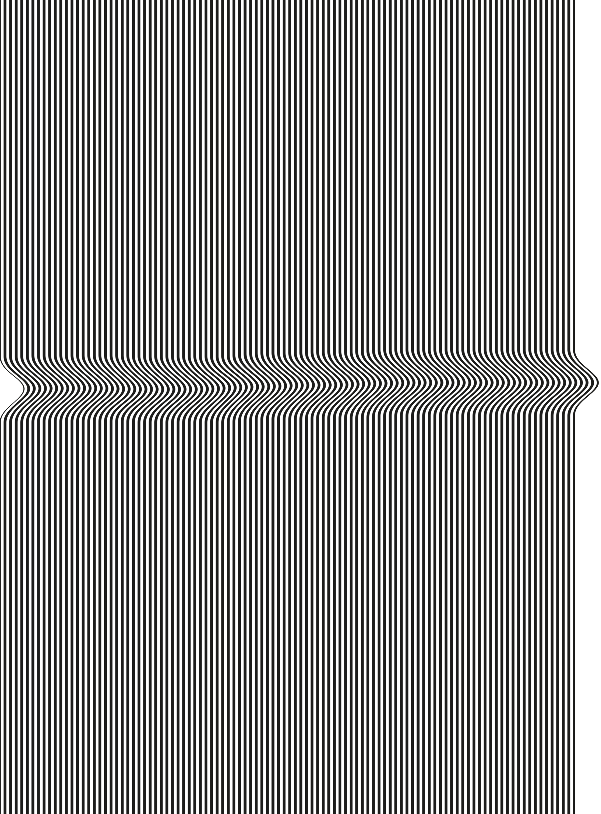
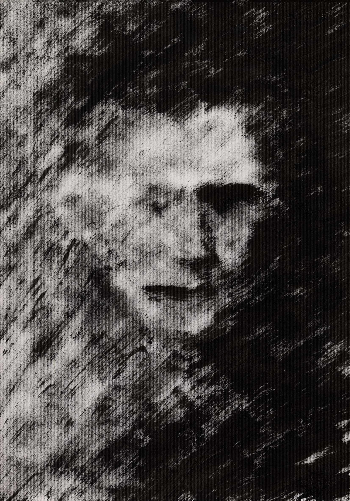
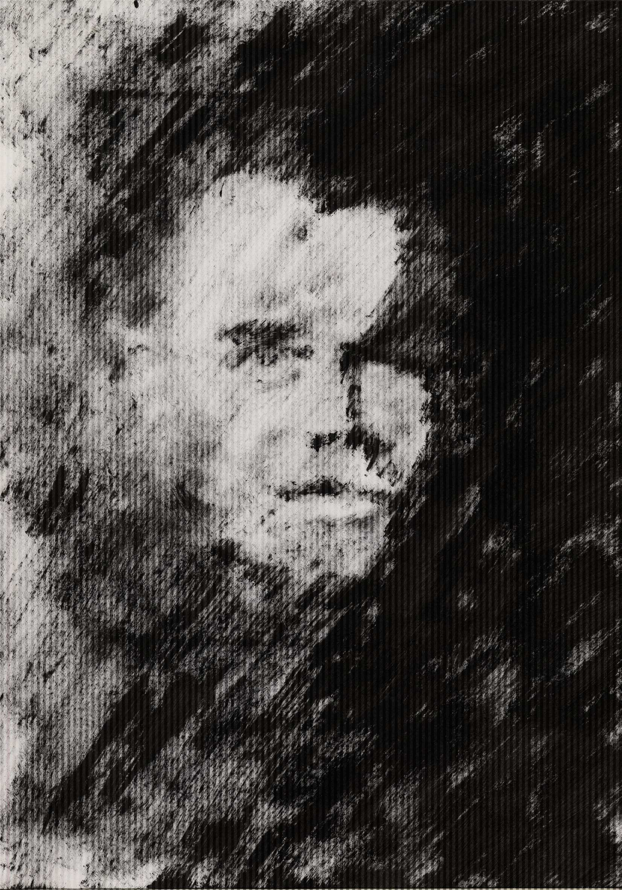
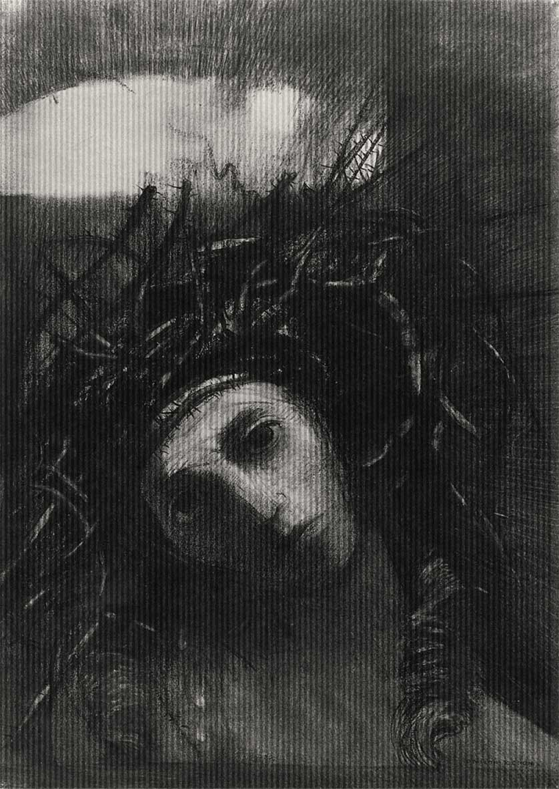
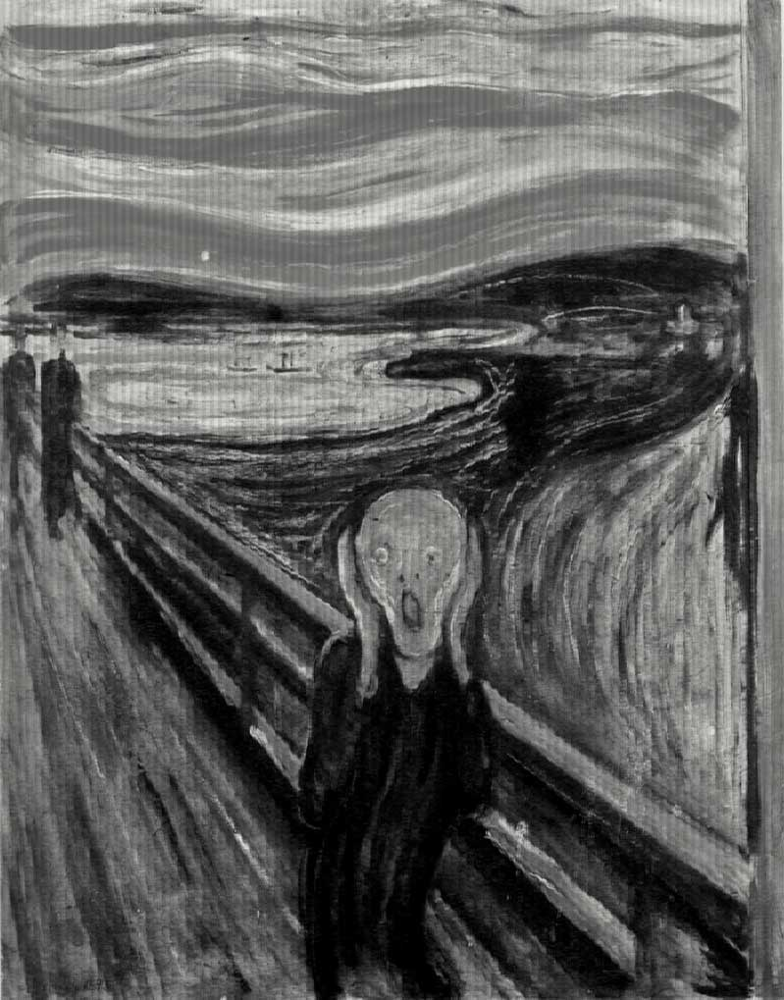
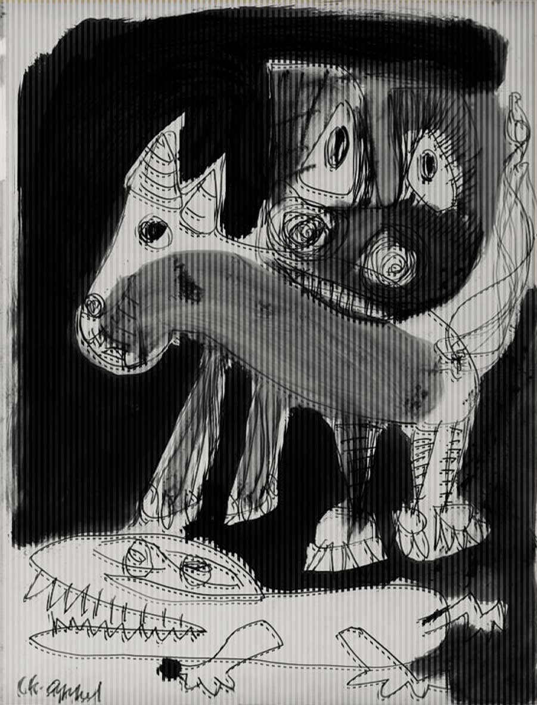
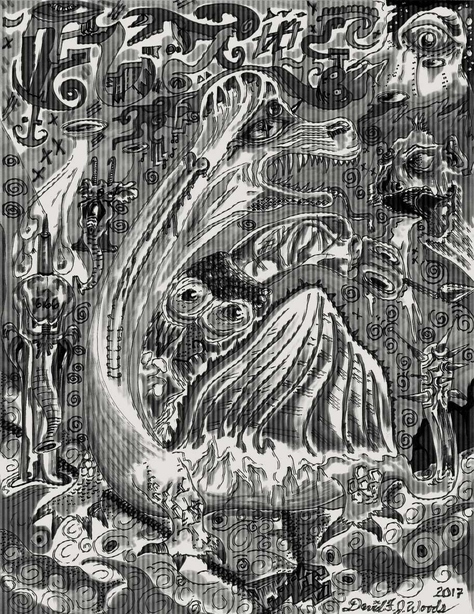

Denk nooit dat het nooit meer kan gebeuren
Voor Piet, Greet, Anna en ... voor mijzelf
Voorwoord
Inleiding
Trauma
Kunst en de psyche
Toegepaste en beeldende kunst
De mogelijkheden
Conclusie
Bronnen
Beeldverwijzingen
Colofon

Figuur 2
Dreas Evers
Verstoring
Haarlem 2017
Voorwoord
In het vierde jaar van de studie Grafisch Ontwerpen aan de Koninklijke Academie van Beeldende Kunsten te Den Haag wordt van mij als student verwacht dat ik een scriptie schrijf over een zelfgekozen onderwerp welke is gerelateerd aan mijn vakgebied.
De scriptie vormt de theoretische en intellectuele basis voor mijn latere afstudeerproject. Bij het schrijven van de scriptie voerde ik, als student, het onderzoeksproces uit welke mij in staat stelt om een goed onderbouwd afstudeerproject te ontwerpen. Het doel van dit proces is om te eindigen met een specifieke onderzoeksvraag in mijn artistieke veld van keuze. Deze vraag onderzoek ik verder tijdens het ontwerpen van mijn afstudeerproject.
In mijn persoonlijke leven heb ik direct en indirect met een aantal trauma’s te maken gehad. Verstoringen ontstaan vanuit oorlog, geloof, seksualiteit, ziekte, verslaving en dood. Gelukkig heb ik een vorm gevonden om met de gevolgen van een aantal van deze trauma’s om te gaan. Voor een aantal andere trauma’s probeer ik nog een vorm te vinden. Wanneer we praten over vormgeven, dan praten we over creëren. In mijn professionele leven ben ik ontwerper. Dagelijks onderzoek ik de vraag achter de vorm, geef ik vorm en probeer ik anderen te begeleiding bij hun vormgevingsvraagstukken.
De hoofdvraag van deze thesis lijkt, als student aan de Koninklijke Academie van Beeldende Kunsten, een natuurlijke afgeleide van mijn persoonlijke en professionele leven. Welke mogelijkheden bieden beeldende en toegepaste kunst ten aanzien van een trauma en de daaruit voortvloeiende gevolgen?
Mijn speciale dank gaat uit naar Els Kuijpers. Zij heeft mij op een bijzonder enthousiaste wijze begeleid bij mijn onderzoek en het schrijven van mijn scriptie. Peter Frugte wil ik danken voor zijn adviserende en participerende rol. Rudolf van Niekerken wil ik danken voor het meelezen en zijn opbouwende kritiek.
André Evers
Koninklijke Academie van Beeldende Kunsten
Grafisch Ontwerpen 2017-2018
Den Haag

Figuur 3
Dreas Evers
Voortvloeiende gevolgen
Haarlem 2017
Inleiding
In de wereld waarin wij leven kunnen mensen getraumatiseerd raken. In grote lijnen kan men een onderscheid maken tussen fysieke trauma’s en psychische trauma’s. Over het algemeen kun je van beide soorten trauma’s zeggen dat het een verstoring is van de bestaande situatie. Het kunnen grote en kleine verstoringen zijn. Verstoringen met een grote impact of een kleine impact op de rest van een mensenleven. De gevolgen van een trauma kunnen kortlopend en langdurig zijn. Sommige verstoringen zijn duidelijk aanwezig, maar verstoringen kunnen ook verborgen zijn. Hoe gaat een mens om met dergelijke verstoringen en de daarbij behorende gevolgen in zijn eigen leven of verstoringen die plaats vinden in het leven van een naaste. Hoe gaan we om met verstoringen die een heel volk, een hele generatie of de hele wereld aangaan. Hoe geven we vorm aan de gevolgen van deze verstoringen. Welke mogelijkheden bieden beeldende en toegepaste kunst ten aanzien van een trauma en de daaruit voortvloeiende gevolgen?
Tijdens het onderzoeken en het beantwoorden van deze hoofdvraag heb ik geprobeerd om in een fijnmazige beschrijving de juiste toon te vinden om de verschillende verschijningsvormen van de separate kwetsbare begrippen trauma, beeldende kunst en toegepaste kunst met elkaar te verbinden aan de hand van praktijk gerelateerde voorbeelden. Maar alvorens ik in deze thesis antwoord probeer te geven op deze hoofdvraag denk ik dat het goed is om de combinatie trauma, beeldende en toegepaste kunst in te leiden door antwoord te geven op de volgende voorbereidende vragen; Wat is een trauma? Waar komt het woord trauma vandaan? Welke relatie hebben trauma, toegepaste en beeldende kunst met elkaar in het verleden? Hoe verhouden toegepaste en beeldende kunst zich tot elkaar?
Tijdens mijn onderzoek ben ik erachter gekomen dat de begrippen Trauma, toegepaste en beeldende kunst grote begrippen zijn. Deze drie begrippen als het centrum van mijn onderzoek raken grote actuele thema’s aan. Thema’s zoals superdiversiteit, slavernij, dood, incest, oorlog, terreur, migratie, seksualiteit, genocide en geloof. Thema’s die op zichzelf al een onderzoek waard zouden zijn. Gezien de beperking in tijd zal ik proberen om in deze thesis de grote lijnen weer te geven en mij te concentreren op de hoofdvraag en het inleiden van de hoofdvraag; Welke mogelijkheden bieden beeldende en toegepaste kunst ten aanzien van een trauma en de daaruit voortvloeiende gevolgen?
 Figuur 4
Figuur 4
Dreas Evers
Het innerlijk uit
Haarlem 2017
Trauma
Wat is een trauma?
Bij 'trauma' denken de meeste onder ons direct aan 'psychisch trauma': een kwetsuur,
een stoornis van de geest teweeggebracht door een overweldigende ervaring. Toch is die betekenis van relatief recente datum. Midden negentiende eeuw betekende trauma, Grieks voor 'wond', alleen 'fysieke verwonding'. Onzichtbare, psychische wonden waren toen nog zo goed als ondenkbaar. Het is belangrijk om te vermelden dat het begrip trauma niet de oorzaak, maar het gevolg is. De invloed van het begrip trauma strekt zich uit van de individuele psychische en fysieke gezondheid tot de familie en zelfs de samenleving.
Ieder mens kan in zij leven geconfronteerd worden met een of meerdere trauma’s.
Deze verstoringen kunnen een gevolg zijn van discriminatie, racisme, slavernij, genocide, oorlog, schendingen van de mensenrechten, seksueel misbruik, huislijk geweld, verslaving, criminaliteit, vandalisme, terreur, natuurrampen, pesten, obesitas, seksuele geaardheid, genderproblematiek, geloof, ouderdom, ziekte, dood of eenzaamheid.
Een visie vanuit de traumapsychologie.
In een interview beschrijft traumapsycholoog Peter Frugte(1952) dat binnen de psychologie en geestelijke gezondheidszorg pas recent meer begrip kwam voor hetgeen zich bij een trauma afspeelt. “Trauma is zo oud als de mensheid zelf. Toch stond men tot voor kort vrij machteloos tegenover de psychische gevolgen van ingrijpende gebeurtenissen zoals natuurrampen, honger, oorlogen, geweld, misbruik, verwaarlozing, ziekte en dood.”[1] Frugte verwijst naar het onlangs in het Nederlands vertaalde boek Traumasporen uit 2016 van psychiater en onderzoeker Bessel van der Kolk(1943) van de Harvard University. “Van der Kolk geeft een boeiend overzicht hoe zich in de afgelopen dertig jaar een revolutionaire verandering heeft voorgedaan in de kennis over trauma en wat zich daarbij in ons lichaam, ons brein en onze geest afspeelt. Duidelijk is dat trauma niet vanuit één wetenschappelijke discipline begrepen kan worden. Onderzoekers op het gebied van psychologie, neurologie, psychiatrie, biologie, ethologie en genetica hebben samen voor de doorbraken gezorgd die door van der Kolk beschreven worden.”[2]
Frugte beschrijft dat het psycholoog en etholoog Peter Levine(1942) is geweest die heeft gezegd dat trauma geen psychologisch, maar in de eerste plaats een biologisch verschijnsel is. “Levine vroeg zich begin jaren negentig af waarom prooidieren geen last hebben van traumatische ervaringen. Het viel hem op dat antilopen die net ontkomen waren aan een leeuw enorm begonnen te trillen. Het lichaam kon zo de overlevingsenergie afvoeren die in korte tijd gegenereerd was om aan de dreiging te ontkomen, namelijk vluchten. Bij andere dieren zag Levine dat, wanneer vechten of vluchten geen optie was, zij vlak voor de eindaanval in een staat van ‘shutdown’, schijndood, terecht kunnen komen.”[3] Volgens Frugte onderstreept het onderzoek van Levine het belang van het zenuwstelsel en hoe mens en dier om gaan met overleven in een wereld vol gevaar.
 Figuur 5
Figuur 5
Dreas Evers
Kamo 1
Haarlem 2017
Volgens Frugte heeft ons zenuwstelsel drie mogelijkheden om met een onverwachte dreiging om te gaan: vechten, vluchten of verstijven van schrik, freeze genaamd.
“Ons lichaam kan binnen één enkele seconde omschakelen naar een stand van overleven. Dit gebeurt volautomatisch en onbewust. Het sympathische zenuwstelsel regelt dat energie vrijgemaakt wordt om te kunnen vechten of vluchten. Wanneer dit succesvol verloopt zal het parasympatische zenuwstelsel zorgen dat onze neurofysiologie terugkeert naar de normale stand. Wanneer er echter geen mogelijkheid is om te vluchten of vechten, of als dit niet succesvol verloopt, dan komt ‘het systeem’, ons psychische en of fysieke functioneren, in een freeze terecht.”[4] Door de shutdown blijft volgens Frugte de enorme hoeveelheid overle¬vingsenergie in het systeem gevangen. Wanneer het niet mogelijk is om deze energie te ontladen, hetgeen verschillende oorzaken kan hebben, dan blijft ons systeem uit evenwicht. “Vroeg of laat ontstaan er symptomen, zoals apathie, gevoelloosheid, nachtmerries, woedeaanvallen, verlies van levenslust.”[5]
Frugte benadrukt dat dit een summiere en schematische uitleg is van wat een overweldigende gebeurtenis in iemands systeem teweeg kan brengen. Volgens Frugte is de werking van het zenuwstelsel en de interactie met de neurofysiologie, zoals neurotransmitters en hormonen een complexe aagelegenheid. “We zijn op weg om er meer van te begrijpen. Toch kan ik met deze simpele uitleg aan mijn cliënten duidelijk maken wat er bij een traumatische gebeurtenis plaatsvindt. Ik merk dat de uitleg voor hen behulpzaam is”.[6]
Frugte vertelt verder hoe Bessel van der Kolk in Traumasporen beschrijft hoe Van Der Kolk, eind jaren zeventig, in het begin van zijn loopbaan, Vietnamveteranen in behandeling had. Bij de minste of geringste trigger konden zij in de herbeleving van hun trauma schieten. Zij waren helemaal in ‘toen’ en hadden geen contact meer met het hier en nu. Dit maakte het moeilijk om een aanknopingspunt voor behandeling te vinden.
Met de komst van nieuwe hersenweergavetechnieken zoals PET-scans en de latere MRI-scans half jaren negentig, werd het voor het eerst mogelijk om een verfijnd visueel inzicht te krijgen in de wijze waarop de hersenen informatie verwerkten. De resultaten van deze onderzoeken waren voor het begrip trauma baanbrekend. Sindsdien is het mogelijk om bij zeer getraumatiseerde cliënten te onderzoeken welke hersengebieden geactiveerd worden wanneer zij tijdens het MRI-onderzoek terugdenken aan de traumatische gebeurtenis. Even informatief is het om te zien welke gebieden juist gedeactiveerd worden. De scans tonen duidelijk aan dat het oproepen van beelden van een trauma de rechterhersenhelft activeert, terwijl het de linkerhersenhelft deactiveert. In de linkerhersenhelft, in het centrum van Broca, zit ons taalcentrum. Zonder een goed functionerend centrum van Broca is het onmogelijk om gedachten en gevoelens in woorden om te zetten.
De resultaten geven aan dat trauma preverbaal is en bevestigt de ervaring dat cognitief, het praten over, gestuurde behandelvormen niet aansluiten bij wat getraumatiseerde cliënten nodig hebben. Het is volgens Frugte belangrijk om te werken met behandelvormen die aansluiten bij de preverbale rechter hersenhelft. Dit kunnen lichaamsgerichte therapievormen zijn zoals ‘Somatic Experiencing’, waar lichaamssensaties de ingang van werken zijn. Ook met ‘Eye Movement Desensitization and Reprocessing[7], afgekort ‘EMDR’ en ‘neurofeedback’ worden volgens van der Kolk positieve resultaten geboekt,

Figuur 6
Dreas Evers
Kamo 2
Haarlem 2017
evenals mindfulness en yoga. Het is volgens Frugte een verademing dat Bessel van der Kolk openstaat voor alle vormen van behandeling die het lijden van getraumatiseerde cliënten helpen te verminderen. Zo ziet hij potentie in het aanwenden van beeldende kunst, muziek, dans en theater. Van Der Kolk zegt daarover: “Talloze getuigenissen tonen de doeltreffendheid aan van deze creatieve therapieën. Op dit moment weten we echter nog maar weinig over hoe ze werken of over de specifieke aspecten van de traumatische stress die ze behandelen. Het vermogen van kunst, muziek en dans om de zwijgzaamheid te omzeilen die gepaard gaat met doodsangst is wellicht een van de redenen dat ze overal ter wereld in traumabehandelingen worden gebruikt.”[8]
Een creatief therapeutische visie op trauma
In een interview beschrijft creatief therapeut, auteur en docent Louis van Marissing(1951) een trauma als een beschadiging. “Een psychisch trauma, van korte of langere duur, eenvoudig of complex, is een verstoring van het dagelijks handelen.
Het dagelijkse functioneren wordt belemmerd. Dit kan zich uiten in stoornissen.[9] Trauma is volgens Van Marissing een hoofdstuk binnen de psychologie waar een mens aan kan leiden. “Ik bekijk het vanuit de invalshoek van de kunst. Wij geven allemaal vorm aan ons leven op alle niveaus. Veel van deze vormgegeven levens verlopen goed. De mensen die in therapie komen die hebben op de een of andere manier klachten bij het vormgeven van hun leven. Wanneer hier ernstige hiaten of blessures in zitten dan wordt de vormgeving verstoord”.[10] Niet alle vormgeving hoeft volgens Van Marissing harmonieus te zijn, maar het moet wel hanteerbaar zijn. Met een goede vormgeving kun je volgens hem, net als met gereedschap, iets doen. Hierbij moet je vormgeving van het eigen leven niet zien als iets eenmaligs, maar als een continuproces. Bij mensen met een trauma zie je tijdens het vormgeven een steeds terugkerende verstoring die niet zomaar weg gaat.
Hoe ontstond en ontwikkelde het begrip trauma?
Zoals Frugte al aangaf, hebben schokkende gebeurtenissen en geweld altijd deel uitgemaakt van het menselijk bestaan. Misbruik, moord, natuurrampen, hongersnood, vervolging en oorlog zijn zo oud als de mensheid zelf. De mentale sporen ervan zijn zichtbaar in de literatuur, de muziek en de beeldende kunst van alle tijden. Dus trauma en de gevolgen van een trauma hebben ook altijd bestaan. Maar hoe is het begrip trauma dan ontstaan?
Het is een navrant, maar ook boeiend gegeven dat traumatische gebeurtenissen en de soms ingrijpende gevolgen pas sinds kort in de belangstelling staan van beroepsgroepen die bij uitstek de mens tot studieobject hebben. Het gaat hier niet alleen om medici en psychologen, maar ook om disciplines zoals sociologie, politicologie en de geschiedschrijving. Een belangrijke reden voor de gebrekkige belangstelling is dat pas laat in de negentiende eeuw het innerlijk leven van de mens onderwerp werd van wetenschappelijke studie. Voorheen was dit bij uitstek het domein van de theologie en de filosofie. Maar ook daar was het innerlijk van de mens zelden een opzichzelfstaand object.[11]
 Figuur 7
Figuur 7
Dreas Evers
Kamo 3
Haarlem 2017
Dat schokkende ervaringen hevige emoties kunnen teweegbrengen, ziek kunnen maken, wist men al langer, maar eind negentiende eeuw kreeg 'psychisch trauma' het statuut van aparte ziekte. Gewoonlijk wordt dat op het conto van Sigmund Freud (1856) en andere psychoanalytici geschreven, maar zij baseerden hun ideeën op de kennis en ervaring van een eerdere generatie artsen en psychiaters die indringende vragen stelden bij de gevolgen van angst en emotionele schokken. Hun observaties, theorieën en debatten hebben een sleutelrol gespeeld in de ontstaansgeschiedenis van de psychologische geneeskunde, de moderne psychologie, psychiatrie en psychotherapie.
Railway Spine
In Traumatic Pasts, een bundel wetenschappelijke bijdragen over de geschiedenis van het traumabegrip, worden vier invloeden onderscheiden: de uitbreiding van de spoorwegen in de tweede helft van de negentiende eeuw; de invoering van de ongevallenverzekering en de vroege welvaartstaat; de opkomst van de psychologische psychiatrie; de Eerste Wereldoorlog met zijn sociale en culturele nasleep.[12]
Moderniteit en trauma lijken onlosmakelijk met elkaar verbonden. De moderne, technologische wijzen van productie, communicatie en vervoer waren belastend voor zenuwstelsel en geest. Het eerste wetenschappelijk onderzoek naar psychische trauma's hield verband met het toenemend aantal spoorwegslachtoffers. In Engeland werden de spoorwegmaatschappijen aansprakelijk gesteld voor de gezondheid en veiligheid van de passagiers.[13] In 1866 dook voor het eerst de diagnose ‘railway spine’, spoorwegruggengraat op. Een geheel van symptomen veroorzaakt door het schokken, door mekaar schudden van de ruggengraat. De artsen vermoedden dat het ruggenmerg organisch beschadigd raakte. Maar men vond niets en geleidelijk aan verschoof de aandacht naar de emotionele, mentale schok.
Artsen in dienst van spoorwegmaatschappijen betwijfelden of er zoiets als een onzichtbare kwetsuur bestond en zagen al helemaal niet hoe die eenduidig vastgesteld kon worden. Stukje bij beetje groeide het inzicht dat niet de gebeurtenis bepalend is, maar zijn ervaring en/of de herinnering eraan. Het trauma is geen direct gevolg van het ongeval maar van de beleving ervan, met angst als de meest ziekmakende factor.
De Parijse neuropsychiater Jean-Martin Charcot(1825) noemde trauma 'Le grand ébranlement psychique', de grote psychische schok. Als een van de eersten deed hij systematisch onderzoek naar trauma's. Freud woonde in de winter van 1885-1886 colleges van Charcot bij en trok daaruit verregaande conclusies. De vroege psychoanalyse is een uitgewerkte herformulering van het vroege denken over trauma's.
Van groot belang voor de erkenning van psychische trauma's waren de wetten die de gevolgen van arbeids- en spoorwegongevallen probeerden te regelen.[14]
Shellshock
In de Griekse geschiedenis beschrijft Herodotus(485 v.Chr.), in zijn verslag van de Slag bij Marathon, al de symptomen van oorlogsneurose. Later, tijdens de Romeinse en Spaanse oorlogen, wordt dit ‘oorlogsnostalgia’ genoemd, omdat de heimwee naar huis de symptomen zou veroorzaken. Tijdens Napoleon(1769) wordt er meer gesproken van oorlogstraumata. De studies over de Amerikaanse Burgeroorlog beschrijven ook de
 Figuur 8
Figuur 8
Dreas Evers
Kamo 4
Haarlem 2017
nostalgie van te jonge soldaten en soldaten met heimwee. Het debat laaide fel op tijdens de Eerste Wereldoorlog toen honderdduizenden soldaten ten prooi vielen aan oorlogsneurose of ‘shellshock’, herkenbaar aan dramatisch beven, stotteren, gezichts- en gehoorstoornissen, geheugenverlies, verlamming en of panische angst. Een ware epidemie volgens sommigen, die de sterkte en het moreel van het leger aantastte.
De natie was in gevaar. Psychische trauma's werden op slag een dringend nationaal probleem.[15]
In februari 1915 gebruikte Charles S. Myers(1873), kapitein-arts van het Royal Army Medical Corps voor het eerst de benaming ‘shellshock’ in zijn artikel in het medische tijdschrift The Lancet, voor de ziekte van soldaten die een granaatexplosie hadden overleefd. En vanaf maart werden in de veldhospitalen speciale afdelingen ingericht voor getraumatiseerden. In eerste instantie was er geen behandeling beschikbaar.
Soldaten met het shellshocksyndroom werden naar huis gestuurd om daar geïnterneerd te worden in een zogenaamd ‘lunatic asylum’, een krankzinnigengesticht. Voor het Engelse leger stond de term shellshock nog steeds gelijk aan lafheid en desertie.
Veel soldaten werden zo voor verraad ter dood veroordeeld door de krijgsraad of gewoon teruggestuurd naar het front. In september 1915 stelde het Engelse Lagerhuis een decreet op om militaire zenuwgestoorden in daarvoor bestemde ziekenhuizen op te nemen. Het totaal aantal shellshockgevallen lag waarschijnlijk in de richting van 53.000-63.000.
Shellshock transformeerde praktisch van de ene op de andere dag van een ziekte naar een epidemie. Het percentage mannen dat aan oorlogsneuroses leed aan de Somme, waar gedurende de Eerste Wereldoorlog een grote slag had plaatsgevonden, lag in totaal iets hoger dan 17 procent. Pas vanaf 1916 was er sprake van een echte behandeling.
Op een medisch congres in Londen stelde men eindelijk richtlijnen op voor de behandeling van shellshockpatiënten, algemene lichamelijke verpleegkundige verzorgingsprincipes die het leed van de patiënten zo veel mogelijk moesten opvangen. De behandeling varieerde van hypnose, psychotherapie en ‘elektroconvulsietherapie’. Deze laatste therapie onthaalde men met veel verzet. Men vond het mensonterend, maar in sommige gevallen bleek het toch doeltreffend. In 1917 kwam het eerste boek Shell-shock uit, een beschrijving van het psychiatrisch zorgsysteem in Engeland gedurende de oorlogsjaren. Ook de verzorgingsrichtlijnen worden hier uitvoerig in beschreven. De psychiatrische ervaring opgedaan tijdens en kort na de oorlog zou uiteindelijk leiden tot grotere aanvaarding van psychologische verklaringen van neurosen, ze bevorderde de ontwikkeling van verbale psychotherapieën en verhoogde de status van de psychoanalyse.
Ook in de Tweede Wereldoorlog bleken soldaten van het front terug te keren in geestelijke nood. In augustus 1943 sloeg generaal George Patton(1885) bij een bezoek aan een veldhospitaal twee soldaten met shellshock en hij typeerde ze als lafaards.
Men gebruikte in plaats van shellshock vaker de term ‘battle fatigue’, oorlogsvermoeidheid.[16]
De overlevenden van de genocide die had plaatsgevonden voor en tijdens de Tweede Wereldoorlog konden na de oorlog niet op steun en begrip rekenen die de last en pijn van hun herinneringen enigszins hadden kunnen verlichten.[17] Hetzelfde gold voor de Nederlanders die terugkeerden uit Nederlands Indië en Japan.
 Figuur 9
Figuur 9
Dreas Evers
Kamo 5
Haarlem 2017
Dit zwijgen was niet alleen kenmerkend voor de man en vrouw op straat, maar ook voor de overlevenden zelf en voor de geesteswetenschappen. Slechts een handjevol medici, vaak zelf overlevenden, probeerden de extreme vervolgingservaringen te beschrijven en te verklaren.[18]
Wetgeving oorlogsgetroffenen
De belangstelling van medici kwam voort uit de medische keuringen die zij moesten uitvoeren in het kader van de diverse wetten voor oorlogsgetroffenen die na de oorlog van kracht werden. Deze wetten vereisten immers dat de mate van invaliditeit en een oorzakelijk verband tussen de invaliditeit en de oorlogservaringen werden vastgesteld.
In Nederland kwam pas na 1973 wetgeving voor oorlogsgetroffenen tot stand.
Vrijwel niemand vermoedde dat zelfs veertig, vijftig jaar na de oorlog nog legitieme aanspraken door oorlogsgetroffenen zouden worden gemaakt. De psychiatrie heeft door haar betrokkenheid bij schadeloosstellings-wetgeving noodgedwongen een taal moeten ontwikkelen om de betekenis van vervolgingstrauma’s voor de lichamelijke en psychische integriteit te beschrijven en te verklaren. Men ging er nog lange tijd vanuit dat trauma’s weliswaar een schok en ontwrichting van de mentale en fysieke toestand van het individu tot gevolg konden hebben, maar dat zodra de stressopwekkende stimuli wegvielen er een vrijwel onmiddellijk en volledig herstel moest volgen. Voor degenen die aannamen dat traumata langdurige gevolgen konden hebben, betrof dit alleen trauma’s uit de kindertijd.[19] Zenuwarts, hoogleraar psychiatrie en voormalig directeur van de Jelgersmakliniek Jan Bastiaans(1917) was een van de eersten die het begrip Concentratiekamp Syndroom oftewel het ‘KZ-Syndroom’ introduceerde.[20] Volgens David Berger()[21] en psycholoog en auteur Robert Jay Lifton(1926)[22] waren de klachten en symptomen die mensen ontwikkelden ten gevolge van de oorlog niet uniek.
De symptomen kwamen ook voor bij anderen die een ‘man made disaster’, oftewel
KZ-Syndroom overleefden.
DSM
Een aanzienlijke kentering in de tot dan toe beperkte belangstelling voor trauma’s en de mogelijke gevolgen daarvan kwam met de introductie van de DSM. Deze Diagnostic and Statistical Manual of Mental Disorders was noodzakelijk geworden om een einde te maken aan de grote internationale spraakverwarring in de literatuur over psychische aandoeningen. Zo kon met de DSM veel meer eenheid gebracht worden in diagnosen. Vanaf het midden van de jaren tachtig werd dit Amerikaanse classificatiesysteem bij steeds meer opleidingen en instellingen voor de geestelijke gezondheidszorg gebruikt.
PTSS
Tijdens en na de Vietnamoorlog werd meer psychiatrisch onderzoek naar de symptomen gedaan en classificeerde men deze als posttraumatische stressstoornis. PTSS valt onder de psychotrauma- en stress gerelateerde stoornissen en moet niet worden verward met het normale verwerkingsproces na een traumatische gebeurtenis. Voor de meeste mensen verdwijnen de emotionele gevolgen van een trauma na enkele maanden.
Als deze echter langer duren, kan er sprake zijn van een psychische aandoening.
 Figuur 10
Figuur 10
Dreas Evers
Kamo 6
Haarlem 2017
Ook in latere conflicten als de Golfoorlogen(1980-1988, 1990-1991, 2003-2011), Srebrenica(1995) en in Uruzgan(2001-heden) zijn gevallen van PTSS gedocumenteerd.
Vanuit verschillende hoeken ontstond veel kritiek op deze classificatie. Overlevenden van de Tweede Wereldoorlog hadden bijvoorbeeld grote moeite met het feit dat de gevolgen van de oorlog, en ook andere ingrijpende traumatische ervaringen, gereduceerd werden tot een tamelijk simpel stelsel van symptomen.[23] “De Holocaust laat zich noch reduceren noch vergelijken.” Ook de huidige critici van PTSS ervaren in toenemende mate problemen met dit concept. Het word steeds duidelijker dat de psychische en lichamelijke gevolgen van ernstige traumatisering complexer en gevarieerder zijn dan de clusters van herbeleving, vermijding en verhoogde prikkelbaarheid toelaten.[24]
De ontwikkeling van het PTSS-concept heeft ook belangrijke voordelen met zich meegebracht. Zoals al eerder gesteld betekende de acceptatie van het concept door de American Psychiatric Association de legitimering van posttraumatische klachten. Daarmee heeft het ook zeker bijgedragen aan de sterk toegenomen belangstelling bij hulpverleners. Een ander belangrijk voordeel is dat de omschrijving van de symptoomclusters onderzoek aanzienlijk gemakkelijker maakte.[25]
Tweede generatie oorlogsgetroffenen
Een tweedegeneratie slachtoffer, ook wel ‘tweedegeneratie oorlogsgetroffene’ genoemd,
is iemand die de psychische en fysieke gevolgen draagt van gebeurtenissen die zijn of haar ouders zijn overkomen. Opgroeien in een gezin waarvan één of beide ouders een overlevendensyndroom hebben, of een ouder in de oorlog is omgekomen, heeft effect op de kinderen. In ernstige gevallen worden de kinderen en zelfs de kleinkinderen slachtoffer. De bewustwording van de tweedegeneratie problematiek begon in 1979 met de publicatie van het boek Children of the Holocaust van universitair docent en auteur Helen Epstein(1947). Tijdens de babyboom na de Tweede Wereldoorlog werden in Nederland tweeënhalf miljoen kinderen geboren. Jaarlijks zoeken enkele duizenden leden van deze naoorlogse generatie psychotherapeutische hulp. Een belangrijk aspect van de tweedegeneratie problematiek is het niet weten wat er is gebeurd, omdat hun ouders daarover niet wilden of konden praten. De term ‘tweedegeneratie slachtoffer’ wordt meestal gebruikt in relatie met de Tweede Wereldoorlog, maar is evenzeer van toepassing op kinderen van andere oorlogsgetroffenen, kindsoldaten, kinderen van vluchtelingen en van veteranen van vredesmissies. Lange tijd werd gedacht dat de traumatische ervaring van een ouder louter psychisch kon worden doorgegeven aan het kind. De verschrikkingen van onder andere de Holocaust zijn echter niet alleen in psychische zin tot de directe slachtoffers beperkt gebleven nu blijkt dat de getroffenen hun ervaringen ook fysiek aan hun kinderen en zelfs aan hun kleinkinderen hebben doorgegeven. Onderzoek wijst uit dat traumatische gebeurtenissen zoals de Holocaust of de aanslag op het World Trade Center in 2001 invloed op de genen hebben, waardoor trauma’s ook fysiek geërfd kunnen worden. De angst wordt waarschijnlijk doorgegeven doordat gestreste hersenen bepaalde moleculen aanmaken die met het bloed mee stromen en het erfelijke materiaal 'brandmerken'. Dit zogeheten epi genetische verschijnsel zorgt er, volgens Rachel Yehuda(1959), hoogleraar psychiatrie en neurowetenschappen en directeur van de afdeling Traumatische Stress Studies aan de Mount Sinai School of Medicine, voor dat de genen snel en zonder mutatie van functie

Figuur 11
Dreas Evers
Kamo 7
Haarlem 2017
kunnen veranderen, dus zonder enige verandering in de genetische code zelf. 'Epi genetisch' betekent 'boven op de genetica',
en het fenomeen werkt als een laag op het DNA dat genen aan en uit kan zetten.
Een traumatische ervaring kan dus genen in- en uitschakelen, waarna het lichaam zich anders gaat gedragen. Concreet betekent dit dat de gevolgen van oorlog, terreur, rampen en hongersnood niet alleen voor de slachtoffers voelbaar zijn, maar ook voor hun kinderen en kleinkinderen.[26]
Door de openheid aan informatiestromen heeft het begrip trauma aan bekendheid gewonnen bij een breder publiek. Het begrip heeft zich in de laatste eeuw verder verbreed naar trauma’s met een grote diversiteit aan oorsprong. Door de progressief voortschrijdende inzichten van de laatste decennia kun je concluderen dat het complex is om het begrip trauma en de werking van de verschijnselen die voortvloeien uit een trauma te definiëren. Op dit moment wordt het begrip trauma op diverse plaatsen in de wereld verder onderzocht.
2. idem
3. idem
4. idem
5. idem
6. idem
7. EMDR
8. Van Der Kolk, p.230-231
9. Van Marissing, p.2
10. idem
11. Aarts, p.1
12. Van Den Berghe, p.1
13. idem
15. idem
16. idem
17. Aarts, p.2
18. Aarts, p.3
19. Aarts, p.4
20. Aarts, p.5
21. Berger, p.31, p.238-251
22. Lifton, p.113-126
23. Aarts, p.10
24. Aarts, p.11
25. Aarts, p.12
26. Palmgren, p.3
 Figuur 12
Figuur 12
Anthonie van Dyck(1599)
De kruisiging
Gent 1627-1630
Kunst en de psyche
Een geschiedenis in vogelvlucht
Trauma en kunst gingen, al lang voordat trauma een begrip werd, hand in hand. Alleen al de ontelbare religieuze visualiseringen van het lijden van Christus(0) vormen hiervoor een bewijs. Deze scriptie gaat echter over het begrip trauma en daarom start ik mijn geschiedbeschrijving eind negentiende eeuw – begin twintigste eeuw, het moment waarop een psychisch trauma het statuut van een aparte ziekte kreeg. Vanaf toen kreeg psychologie meer bekendheid bij een breder publiek door de praktische toepassingsvorm testpsychologie, ook wel bekend als psychodiagnostiek. Freud heeft in deze tijd een grote bijdrage geleverd aan de ontwikkeling van de psychologie. Het grote publiek bekeek de opvatting van Freud met argwaan. Zij brachten oude vertrouwde zekerheden aan het wankelen. De psychologie van Freud openbaarde zaken in de mens die men liever ontkende. Veel mensen waren van mening dat mede dankzij de technologische ontwikkelingen die hun oorsprong in de tweede helft van de negentiende eeuw kende
nog steeds voor grote vooruitgang zorgde. Zij wisten zich geen raad met deze nieuwe opvattingen. Dit kwam tot uiting in de kunst.(Figuur 12)
De werking van kunst is nauw verbonden met de tijd en de ruimte waarin het zich bevindt. De geschiedenis leert ons dat zodra tijd en ruimte veranderen, ook de context verandert waarin kunst functioneert. Maatschappelijke condities, normen en de tijdgeest zijn altijd van grote invloed geweest op toegepaste en beeldende kunst. Elk tijdperk bracht kunstenaars met bepaalde specifieke creatieve opvattingen met zich mee, altijd nauw verbonden met de conditie waarin de maatschappij zich op dat moment bevond. Naast reeds bestaande stromingen zoals het impressionisme en het symbolisme ontstonden rond 1900 nieuwe stromingen zoals het estheticisme, het postimpressionisme en het expressionisme.
Symbolisme
Het symbolisme ontstond halverwege de negentiende eeuw, maar was anno 1900 nog steeds van grote invloed. Het centrum van de symbolische kunst rond de eeuwwisseling was gelegen in Parijs. Het symbolisme vormde een tegenreactie op nieuwe wetenschappelijke ontdekkingen en het vooruitgangsdenken. Toenmalig symbolistisch dichter Gustave Kahn(1859) schreef: “deze mensen zoeken alleen maar naar bronnen van inkomsten, terwijl de bron van de dromen opdroogt”. Het symbolisme had een sterke hang naar het verleden, de fantasie, de intuïtie, het onverklaarbare en het onderbewuste. symbolen in de voorstellingen verwezen in de figuratieve stroming naar gevoelens of ideeën. Deze stroming kreeg een sterke impuls door de nieuwe wetenschap ‘psychologie’. Door de psychoanalyse van Freud ontstond er nieuwe kennis over het onbewuste.
Freud verklaarde de onbewuste drijfveren en driften van de mens. Psychische energiestromen die ongemerkt het gedrag van de mens beïnvloeden. Freud onderscheidde de levensdrift Eros, de doodsdrift Thanatos en de seksuele drift Libido. Kunstenaars probeerden deze driften in beeld te brengen. Symbolisme leidde tot een

Figuur 13
Odile Redon(1840)
Head of Christ wearing the Crown of Thornes
1895
nadrukkelijker en bewuster gebruik van kleuren als uitdrukkingsmiddel van emotie en daarmee van de eigen werkelijkheid. Hetzelfde geldt voor het gebruik van vormen en lijnen, die niet meer precies conform de werkelijkheid hoefden te zijn.[27](Figuur 13)
Fin de siècle
De culturele periode rond de toenmalige eeuwwisseling kreeg de toepasselijke naam fin de siècle , hetgeen letterlijk vertaald ‘einde van de eeuw’ betekent. Op politiek en cultureel gebied kwamen jonge kunstenaars in opstand tegen de toenmalige geldende ideeën. Bij deze groep ontstond het fin de siècle-gevoel. Zij vonden dat de negentiende eeuw nu wel lang genoeg had geduurd en dat het tijd was voor vernieuwing. Er ontstond een tweespalt, omdat deze nieuwe stromingen met verwachting, maar ook met angst tegemoet werden gezien. Kunstenaars onttrokken zich hierdoor aan de werkelijkheid.
Zij creëerden een kunstmatige wereld van overbeschaving, een wereld van luxe en genot. Het persoonlijke leven van kunstenaars kenmerkte zich door decadentisme en dandyisme. Drank, drugs, losbandigheid en een overdreven verfijning speelden bij het ontvluchten van de werkelijkheid een grote rol. Zij wilden een mooiere wereld scheppen. Het fin de siècle tijdperk noemt men daarom ook wel la belle époque, het mooie tijdperk. Estheticisme vormde de toon in de kunsten. Kunst mocht geen andere functie hebben dan schoonheid. De kunstenaars ontkoppelden de maatschappelijke verantwoordelijkheid en de kunst.
Dit noemt men het ‘l’art pour l’art-doctrine.’ Jugendstil of art nouveau zijn hier goede voorbeelden van.[28]
Postimpressionisme
Ook bij het postimpressionisme ging het de schilders niet zo zeer om een exacte weergave van de werkelijkheid, maar om een weergave van de indruk die zij hadden van de werkelijkheid, de impressie. De kunstenaar probeerde de zintuiglijke indrukken, impressies van kleur, licht en vorm te visualiseren. Deze manier van werken had alles te maken met de opboeiende kennis van de psychologie. Deze wetenschap leerde de kunstenaars van die tijd dat de hersenen de opgedane indrukken van de ogen interpreteert, waarna het betekenis geeft aan de waarneming. Op deze manier is het Postimpressionisme zowel objectief als subjectief. De werkelijkheid werd uitgebeeld op de manier zoals de kunstenaar deze werkelijkheid waarneemt.
Expressionisten
In de eerste helft van de 20e eeuw, benadrukten verschillende kunststromingen,
mede na het ontstaan van de psychoanalyse het belang van échte uitdrukkingsvormen.
De psychoanalyse droeg bij tot de zoektocht van de expressionisten, dadaïsten en surrealisten naar het authentieke. De expressionisten drukten via de beeldtaal hun sterke emoties uit. De link tussen het echte, pure in zogenaamde primitieve culturen,
in de kunst en in de wereld van de geesteszieke, was dan ook niet ver te zoeken.
Hun kunstvormen werden geïmporteerd en geïntegreerd in het eigen werk van de kunstenaars.
Het expressionisme, Latijns voor ‘expressia’, uitdrukking, was een stroming in de Europese kunst van de twintigste eeuw die zich manifesteerde tussen 1905 en 1940. In het expressionisme trachtte de kunstenaar zijn gevoelens voor de waarnemer

Figuur 14
Edvar Munch(1863)
De Schreeuw
1893
uit te drukken door een zekere vervorming van de werkelijkheid. Belangrijk was daarbij vooral dat de gevoelswaarde, het onderbewuste van de kunstenaar, de boventoon voerde. Friedrich Nietzsche(1844) was feitelijk de geestelijke voorvader van deze stroming. Er bestonden binnen deze stroming geen wetten. Vooral de subjectieve beleving stond centraal. De basiskenmerken van het expressionisme waren felle en onnatuurlijke kleuren, grillige beelden, vervormingen, slordig geschilderd, plat vlak,
geen perspectief.(figuur 14)
Dadaïsme
Max Ernst(1891) studeerde van 1909 tot 1914 psychologie, filosofie en kunstgeschiedenis. Gewoonlijk wordt het werk van de in Duitsland geboren kunstschilder en beeldhouwer gerekend tot het surrealisme. Maar voordat Ernst actief werd binnen de surrealistische beweging zette hij samen met Hans Arp(1886) en Johannes Theodor Baargeld(1892) in Keulen de dadaïstische groep ‘Bullitin D’ op. Dada was een kunststroming die zich net onder de realiteit afspeelde. De kunstenaars van deze stroming gebruikten bestaande voorwerpen op een nog niet bestaande manier.
Verder maakten de dadaïsten gebruik collage- en assemblagetechnieken. In de dichtkunst waren het nonsensgedichten die zich puur richtten op klankuitingen. Dadaïsme ontstond als een negatieve reactie op de verschrikkingen van de Eerste Wereldoorlog.
De dadaïsten bespotte zowel literaire als plastische kunstenaars op een schokkende wijze. Een manier om de schijnheilige normen en waarden van de zogenaamde beschaafde wereld aan te vallen. De kunstenaars keerden, in een wereld die verviel in gruwelijke loopgraafgevechten, terug in hun eigen kinderlijke creativiteit. Het dadaïsme groeide uit tot een kortdurende, maar internationale beweging.[29]
Surrealisme
In de jaren twintig hanteert Ernst vanuit de dada steeds meer een surrealistische stijl. Ernst verhuisde naar Parijs en begon te experimenteren met het 'psychisch automatisme', een manier van spontaan schilderen zonder dat men gebruik maakte van de rede, dat als een belangrijke methode werd beschouwd, om tot surrealistische kunstwerken te komen. Op een bepaald moment begeeft Ernst zich in de kringen van André Breton(1896), de grondlegger van het surrealisme. De psychoanalyse van Freud speelde ook in het surrealisme een belangrijke rol. Voor het op een visuele wijze onderzoeken van hun ideeën maakten sommige kunstenaars gebruik van deze psychoanalyse. Het bevrijden van de mens was het motto voor de surrealisten. Gedurende de Eerste Wereldoorlog werkte André Breton als inwonend arts in een psychiatrische kliniek. Hier behandelde Breton mensen die zenuwstoringen hadden opgelopen door granaatvuur. Het analyseren van de dromen van zijn patiënten leverde Breton de belangrijkste uitgangspunten op van het surrealisme. Het dromend bewustzijn openbaarde de ongecensureerde waarheid. Het was de kracht van het onbewuste. Breton beschouwde zijn patiënten niet als geesteszieken, maar als orakels.
De geestelijke ontwrichting waarin zijn patiënten zich bevonden toonde volgens Breton de schaduwzijde van ons bestaan. In het algemeen vormden drie soorten creatieve uitingen de basis voor het ongecensureerd prijsgeven van symbolen. De primitieve kunst, kindertekeningen en kunst gemaakt door zwakzinnigen.[30](figuur 15)
 Figuur 15
Figuur 15
Otto Dix(1891)
Schädel
1924
De Prinzhorncollectie
Vanaf het begin van de vorige eeuw kregen geesteszieken in de westerse maatschappij steeds meer een stem. Hierdoor ontstond een toenemende aandacht voor de artistieke uitingen van geesteszieken. Psychiater Walter Morgenthaler(1882) publiceerde in 1921 het boek Ein Geisteskranker als Künstler. Hierin besprak hij een serie door Adolf Wölfli(1864) vervaardigde werken. Wölfi verbleef op dat moment als schizofrene patiënt in het Waldau-ziekenhuis bij Bern. In dit boek werd een aan schizofrenie lijdende patiënt als beeldend kunstenaar voor het eerst serieus genomen.[31] Tussen 1919 en 1921 verzamelde psychiater én kunsthistoricus Hans Prinzhorn(1886), werkzaam in de universiteitskliniek van Heidelberg, een collectie van 5.000 werken afkomstig van wel 450 patiënten uit inrichtingen in Oostenrijk, Duitsland en Zwitserland. Prinzhorn bekeek in zijn publicatie Bildnerei der Geisteskranken in 1922 de werken eerder vanuit een kunsthistorisch dan vanuit een psychiatrisch perspectief. Prinzhorn typeerde de werken als een expressie van een schizofreen bewustzijn voortkomend uit traumatische ervaringen die zijn ontstaan tijdens de Eerste Wereldoorlog. Niet als een creatieve uiting van een zieke geest, maar als commentaar op de westerse beschaving.[32](Figuur 16)
Entartete kunst
De nationaal socialisten in Nazi-Duitsland gebruikten tussen 1933 en 1945 de term ‘Entartete Kunst’. Het ging hier om kunst die niet aan de eisen van het nationaalsocialistische regime voldeed. De vaak joodse kunstenaars werden ervan beschuldigd dat zij door middel van hun kunst probeerde om het raciale bewustzijn, de politieke macht en de militaire weerbaarheid, maar bovenal de morele kracht van het Duitse volk te ondermijnen. Gezien het feit dat het de 'entartet'-verklaarde kunstenaars al vlak na de nazi-machtsovername in 1933 onmogelijk werd gemaakt om te werken, emigreerden velen van hen. Anderen kunstenaars met een joodse achtergrond overleden in concentratiekampen, in gevangenissen of pleegden zelfmoord. De ateliers werden vernield en Honderden werken werden in beslag genomen. Het ging vooral om moderne kunst uit die tijd, zoals abstracte kunst en het expressionisme. Ook een deel van de Prinzhorn Collectie behoorde tot deze ‘ontaarde kunst’. Dat werken uit deze collectie zij aan zij hingen met werken van de Duitse expressionisten op de tentoonstelling over entartete kunst in 1938, bewijst dat zij samen met de kunst van dat ogenblik afweken van de geldende normen in Nazi-Duitsland. Vanuit de optiek van Prinzhorn zorgde het exposeren van het werk van patiënten naast de ‘officiële kunst’ voor eerherstel van de psychiatrische kunst door ze eindelijk naar artistieke maatstaven te meten. Uiteindelijk lag Prinzhorn’s grootste verdienste elders. Zijn collectie kreeg, zoals hij gehoopt had, artistieke invloed. Het werd een soort bedevaartsoord voor kunstenaars.[33]
Creatieve therapie
In 1938 tekende de Britse kunstenaar Adrian Hill(1895) vanuit zijn ziekenhuisbed de dingen die hij vanuit zijn directe omgeving waarnam. Hill was in het King Edward VII Sanatorium in Midhurst aan het herstellen van tuberculose. In 1939 maakte het sanatorium voor het eerst gebruik van ergotherapie. Het sanatorium vroeg Hill om teken en schilderles te onderwijzen aan andere patiënten. In eerste instantie gaf hij les aan
 Figuur 16
Figuur 16
Johann Knopf(1866)
Der Große Bumperton am Sabath
± 1910
gewonde soldaten die terug kwamen uit de oorlog, later ook aan reguliere patiënten.
Hill ontdekte dat het maken van kunst de patiënten afleiding bezorgde en hun mentale leed verlichtte. Hill geloofde dat ook kunstwaardering het herstel van ziekte bevorderde. Hij raakte betrokken bij het opzetten van een regeling waarbij reproducties van werken van beroemde kunstenaars werden uitgeleend aan ziekenhuisafdelingen in het hele land. Hill bedacht in 1942 de term 'kunstzinnige therapie' en publiceerde in 1945 zijn ideeën in het boek Art Versus Illness. Hill dacht dat wanneer het fysieke verzet van de patiënt het laagst was, dit op de een of andere manier het 'dierlijke ego' kalmeerde en de creatieve krachten van het spirituele wezen door kunstwerken liet doorkomen. Hij erkende dat oorlog niet alleen fysiek destructief was, maar ook geestelijk beschadigde en dat de behoefte aan psychologische genezing zelfs belangrijker was dan alleen een fysiek herstel. Hij geloofde dat de praktijk van de kunst, in ziekte en in gezondheid, de samenleving van de oorlog kon afbrengen door artistieke creativiteit meer op prijs te stellen. Hij zag kunsttherapie als een integraal onderdeel van de National Health Service.[34]
De kunstenaar Edward Adamson(1911) voegde zich in 1946 bij het programma in het Netherne Hospital in Surrey. Op dat moment werd het programma uitgebreid naar mentale gestichten voor langdurig verblijf. Adams was zowel een grote invloed op de Britse ontwikkeling van kunstzinnige therapie voor mensen met ernstige psychische stoornissen als de samensteller van de ‘Adamson-collectie’. De Adamson-collectie is een verzameling van ongeveer 6.000 tekeningen, schilderijen, keramiek en sculpturen gemaakt door mensen die gedwongen werden om in Netherne te wonen.
In de Verenigde Staten Margret Naumburg(1890) en Edith Kramer(1916) gezien kunnen worden als de grondleggers van de creatieve therapie.[35] In het hoofdstuk
“Het onuitspreekbare gevisualiseerd” ga ik samen met Louis van Marissing verder in op deze therapie.
Art Brut
Originaliteit en authenticiteit vormde steeds meer de kerngedachte van de kunst.
In 1945 reisde Jean Dubuffet(1901), een gewezen wijnhandelaar die reeds tweemaal de droom opgaf om kunstenaar te worden, naar Zwitserland om de Morgenthaler-collectie te zien. Diep onder de indruk begon hij zelf met verzamelen. Uiteindelijk ging het Dubuffet om een geactualiseerde herneming van het idee van de zuiverheid die onder andere Prinzhorn verkondigde. Een zoektocht naar het authentieke, een niet door de omgeving verstoorde expressie, zoals deze te vinden zou zijn bij kinderen, primitieve volkeren en psychiatrische patiënten. Net zoals Prinzhorn, koesterde ook Dubuffet de ambitie om de chaotische, naoorlogse kunstwereld met deze natuurlijke kunst een impuls te geven. Toch waren er belangrijke verschillen tussen Prinzhorn en Dubuffet. Verschillen die van invloed waren op het collectioneren. In zijn politieke visie keerde Dubuffet zich af van het reguliere kunstcircuit, die hij een verstikkende cultuur noemde. Een belangrijk ander verschil met Prinzhorn was dat Dubuffet niet als hulpverlener, maar als kunstenaar de rol van curator op zich nam.[36] Dubuffet lanceerde het begrip ‘Art Brut’ toen hij, in juni 1948, in de Parijse kelders van de Galerie René Drouin op de Place Vendôme, samen met de kunstenaars Breton en Paulhan(1884) de ‘Compagnie de l'Art Brut’ stichtte. Het was daarbij de bedoeling kunstexposities te organiseren van werken die volgens Dubuffet een spontaan en inventief karakter hadden. Kunstexposities die zo
 Figuur 17
Figuur 17
Jean Dubuffet(1901)
D'hôtel nuancé d'abricot
1947
min mogelijk afhankelijk waren van de normen van de reguliere kunst of van de toenmalige culturele voorschriften en die voortkwamen uit ‘duistere’ personen, die vreemd waren aan het professionele artistieke milieu. Hierdoor vond er een verbreding plaats in het ‘alternatieve’ kunstcircuit dat tot dan toe tot het terrein van de psychische patiënten behoorde. Naast werken van geesteszieken, die hij zocht in verschillende psychiatrische instellingen, verzamelde hij ook origineel werk van kunstenaars die in de marge van de samenleving hun werk produceerden. De gevestigde kunst noemde hij ‘art culturel’, ofwel gecultiveerde kunst, die volgens hem nooit puur kon zijn.(Figuur 17)
Cobra
Toch richtte in 1948 in Parijs in de reguliere kunstwereld een nieuwe groep zich op onder de naam Cobra. Ook deze groep liet zich deels inspireren door tekeningen en schilderijen van kinderen en geesteszieken. Er volgden bij de Compagnie de l’Art Brut geruchtmakende exposities, maar uiteindelijk stopte zij in oktober 1951. De compagnie richtte zich opnieuw op in juli 1962. Hun verzet tegen de gevestigde culturele orde versterkte zich eind jaren zestig door een algeheel verzet tegen de gevestigde orde in Parijs. Het begin van een veelomvattende sociale en culturele revolutie, waarin studenten, arbeiders, ambtenaren, journalisten, scholieren en kunstenaars in beweging kwamen.[37](figuur 18)
Psychofarmaca
In 1953 brak er een revolutie door in de psychische gezondheidszorg. Ondanks de korte testperiode en de enorme lijst van bijwerkingen verscheen het medicijn ‘Largactil’ op de markt. Largactil was een rustgevend middel dat angsten of waanideeën bij patiënten verminderde waardoor therapeutische gesprekken ineens wel mogelijk bleken.
Rond 1970 heerste er in Europa een anti-psychiatrisch klimaat waarin normaal en abnormaal hun betekenis verloren en waarin ‘psychiatrische kunst’ bijgevolg zijn betekenis verloor. Beschermers van de patiënt-kunstenaars transformeerden zich tot denkers die het bestaan van stoornissen zoals schizofrenie stellig betwisten. In het decor van de universitaire psychiatrische kliniek van Heidelberg, de thuisbasis van de Prinzhorn-collectie, meende professor dokter Wolfgang Huber(1942) in het begin van de jaren zeventig dat geestesziekten uitsluitend het gevolg waren van het kapitalisme als economisch systeem.[38]
In dezelfde periode gingen kunstenaars als Georg Baselitz(1938) en Arnulf Rainer(1929) zich interesseren en engageren voor de psychiatrische kunst. Deze interesse ging samen met een afwijzing van de psychiatrie en het heersende politieke bestel. Rainer riep de patiënt-kunstenaars op om zich te documenteren, zich weerbaar op te stellen tegenover hun behandelaars en zelf hun werk te bewaren en te beheren. Zelf gebruikte hij hallucinogene drugs om het werk van zijn beschermelingen, patiënten met een psychotische aandoening, vanuit hun geestestoestand te kunnen begrijpen.[39]

Figuur 18
Karel Appel(1921)
onbekend
1949
Psychedelische kunst
Bij Sandoz Laboratories werkte de Zwitserse onderzoeker Albert Hofmann(1906).
In 1943 deed Hofmann onderzoek naar een bepaalde stof. Tijdens het zuiveren van deze stof ervoer hij een plezierige intoxicatie die een paar uur duurde, gekenmerkt door een enorme versterking van de verbeeldingskracht en een veranderde waarneming van de wereld om hem heen. Als hij zijn ogen sloot zag hij levendige, caleidoscopische kleurrijke beelden.
Hij realiseerde zich dat deze effecten ontstonden door de stof waar hij die dag mee had gewerkt. LSD was geboren. Gedurende twee decennia na zijn ontdekking bracht Sandoz Laboratories LSD op de markt als een belangrijk medicijn voor psychologisch en neurologisch onderzoek. Psychiaters gebruikten deze drug wereldwijd om geestesziektes zoals psychosen te behandelen.[40] In de jaren vijftig hoorde Bastiaans tot de groep jonge psychiaters die geïnteresseerd waren in de psychosomatische gevolgen van onderdrukking en verzet en het gebruik van LSD. Van 1963 tot 1982 was hij directeur van de Jelgersmakliniek in Oegstgeest, waar hij vooral bekendheid kreeg als arts ten behoeve van mensen met een oorlogstrauma.[41] Hofmann zag ook het potentieel van het medicijn voor dichters en kunstenaars. De in Los Angeles gevestigde psychiater Oscar Janiger(1918) voerde in een klinische context vroege psychedelische artistieke experimenten uit met LSD.
De geteste kunstenaars zeiden vrijwel unaniem dat LSD een verbetering bewerkstelligde van hun creativiteit. Het woord ‘psychedelisch’, bedacht door de Britse psycholoog Humphry Osmond(1917), betekende ‘manifestatie van de geest’. Volgens die definitie konden alle artistieke pogingen om de innerlijke wereld van de psyche weer te geven als psychedelisch worden beschouwd. In het gewone spraakgebruik verwees 'psychedelische kunst' vooral naar de kunststroming van de tegencultuur in de late jaren zestig. De door psychedelische drugs veranderde bewustzijnstoestanden vormden een bron van artistieke inspiratie. Concertaffiches, albumhoezen, vloeibare lichtkunst, vloeibare lichtshows, stripboeken, muurschilderingen, underground kranten en meer weerspiegelden niet alleen de caleidoscopisch wervelende kleurpatronen van LSD-hallucinaties, maar waren ook representaties van de toenmalige sociale, spirituele en revolutionaire politieke sentimenten. LSD had een enorme invloed op de hippiebeweging.[42](Figuur 19)
Normering
In 1972 gebruikte Roger Cardinal(1940) in verband met Art brut voor het eerst de term ‘outsider art’, in zijn geschrift Cultural Conditioning. De term outsider art was een Engelse equivalent voor het Franse art brut. Het uit het Engels afkomstige begrip was echter ruimer. Alle kunst die niet binnen de toenmalige gevestigde kunstwereld viel hieronder.
In zijn pamflet Asphyxiante-cultuur, een klassiek statement van een anti-culturele houding, vertelt de kunstenaar Jean Dubuffet een leerzame anekdote om te illustreren in hoeverre culturele vooroordelen betreffende geaccepteerde ideeën over kunst, een begrip als outsider art volledig kunnen verstikken. Dubuffet wees op de domheid van redeneringen die gebaseerd zijn op een notie van objectieve waarde. Hij noemde dit de
 Figuur 19
Figuur 19
Henry Michaux(1899)
Untitled Passages
1961
ergste vorm van culturele bijziendheid. Waar ‘gerespecteerde’ critici hun goedkeuring hadden bevestigd, leek er geen ruimte meer te zijn voor onenigheid. Zij bepaalden de norm! Dubuffet wees de lezer echter op de invloed van de achtergrond en de culturele vorming van de criticus ten aanzien van zijn oordeel.[43] Outsider art kunstenaars genereerde als buitenstaanders een wervelende stroom van nieuwe werelden, die uit de mens en de materie ontsprongen. Hun taal was die van de subversiviteit, de weerspannigheid van het individu en de weerbarstigheid van de materie.[44]
Outsider Art
Het begrip outsider art bespreken is complex. Alleen de naamvoering roept al vele vragen op, laat staan wanneer er wordt overgaan tot het formuleren van een definitie of het plaatsen van het begrip binnen het culturele veld. Wanneer bij het bestuderen van de naam outsider art het accent komt te liggen op het woord outsider, dan kun je concluderen dat als je een ‘outsider’ hebt er ook een ’insider’ moet zijn. Wanneer we over de woorden outsider en insider hebben dan is er sprake van een normering. Wie is er inside en wie is er outside? Zijn outsiders geen insiders binnen hun eigen gemeenschap?
Is de outsider, sinds het gebruik van het begrip outsider art, nog steeds een outsider?
De naam suggereert een zekere uitsluiting. Sterker nog, deze naamvoering sluit zichzelf buiten. Je kunt je afvragen of outsider art als classificatie nog steeds een aparte status nodig heeft en of we in ons taalgebruik nog behoefte hebben aan deze benaming.
Daniel Wojcik(), auteur en hoogleraar Engelse en folklore studies aan de University of Oregon, schreef in zijn boek Outsider Art, Visionary Worlds and Trauma dat de term outsider art het onderwerp is van een voortdurende discussie. Volgens Wojcik promoten sommige kunsthandelaren en critici het begrip outsider art tot een echte stroming.
Het ‘concept’ outsider art bloeide volgens hem met gemak op tot een marketing label voor kunst buiten de mainstream. Door deze benadering groeide outsider art zelf bijna uit tot een mainstream kunststroming.[45] De vraag is of dit in het belang is van de makers. Commercieel gezien gaat men volledig voorbij aan de intentie. Daarnaast ontstaan er een aantal andere vragen. Kun je kunst gemaakt door outsiders wel door dezelfde bril bekijken als kunst gemaakt door insiders? Kun je deze outsiders wel lastig vallen met deze kritiek? En als laatste, hebben deze outsiders überhaupt gevraagd om kritiek? Wojcik wijst ons er ook op dat mensen het begrip outsider art afwijzen omdat het in hun ogen wordt gezien als een ‘aanvallend concept’. Degenen die outsider art veroordelen beargumenteren dat deze stroming een elitair alternatief is, buitensluitend, denigrerend, racistisch en onmenselijk. Zij vinden dat deze stroming de kunstenaars als pathologisch of primitief markeren ten aanzien van ‘normale’ mensen en de geldende culturele norm.[46]
In 2015 verraste Het Gemeentemuseum in Den Haag zijn bezoekers met de tentoonstelling Outsider Art, Creativiteit Buiten de Kaders. In het voorjaar van 2016 vond in de Kunsthal Rotterdam de aftrap plaats van de outsider art manifestatie The Museum of Everything. Een expositie die erop was gericht om een breed en duurzaam platform voor outsider art in Nederland te ontwikkelen. In 2016 opende het Outsider Art Museum in
 Figuur 20
Figuur 20
Rosemarie Koczy(1939)
I weave you a shroud
1975-1985
Amsterdam, een initiatief van Dolhuys Museum van de Geest en de Hermitage, zijn deuren. Ook Hans Looijen(1965), directeur Outsider Art Museum en Dolhuys Museum van de Geest, wees ons in de uit 2016 daterende catalogus Outsider Art, De innerlijke stem in de kunst, erop dat outsider art als term voortdurend onder vuur ligt. Het zou geen recht doen aan de kunstenaars. Het zou zelfs bijdrage aan uitsluiting en stigma. Toch opteert Looijen niet alleen voor dit begrip omdat het als geuzenaam kan worden opgevat, maar toch vooral omdat het begrip de mens wijst op de koppige eigenheid en uitzonderlijkheid van veel getalenteerde kunstenaars en hun oeuvre. In plaats van ons te blijven afvragen wat een nieuwe definitie zou moeten zijn van een haast ongrijpbaar corpus aan werken met veel uiteenlopende verschijningsvormen, konden we ons, volgens Looijen, beter richten op het realiseren van een volwaardige plaats in de wereld voor deze opvallende kunst. “Laten we outsider art blijven definiëren aan de hand van de kunstenaars en hun werk, ons blijven verwonderen, verbazen, ontroerd raken of wreed verstoord”.
Looijen schreef in zijn catalogus dat psychiatrische diagnoses of aandoeningen van geen enkel belang zijn bij het vaststellen of we praten over outsider art. Volgens Looijen ging het bij het Outsider Art Museum niet om het mainstream maken van outsiders, maar om het bevragen van de conventies van de artistieke cultuur en de verwondering en waardering voor de door outsiders gecreëerde kunst.[47]
De perfecte imperfectie
Oftewel Wabi Sabi. De schoonheid van het onvolmaakte, vergankelijke en onvolledige.
Het maakt bescheiden en nederig. Imperfecties zorgen voor de uniciteit van elk individu. Imperfecties maken elk individu herkenbaar, aimabel, kwetsbaar, eigen, menselijk.
De schoonheid van het onconventionele vraagt om moed. Tijdens de Paralypische Spelen van 2016 schreef de Volkskrant zelfs “Er is geen plaats voor schaamte. Het ongewone is de norm.”[48] Onze eigen imperfecties zorgen voor tolerantie tegenover de imperfecties van anderen. Toch vechten wij allemaal tegen het imperfecte van lichaam, geest en uiterlijk. Wat is perfect en wanneer is iemand of iets perfect? “Gelukkig is niemand perfect”, is een regelmatig terugkerende uitdrukking. Maar als je duidelijk zichtbaar of zelfs onzichtbaar "imperfect" bent, dan kun je het in het dagelijkse leven moeilijk hebben en moet je sterk in je schoenen staan. Vertel maar eens aan een psychiatrisch patiënt dat imperfectie perfect is. Vertel maar eens aan een medemens met een aangeboren misvormt uiterlijk dat zijn uniciteit schoonheid bevat. Wij beoordelen en worden dagelijks beoordeeld op ons uiterlijk, ons innerlijk en ons functioneren. Op een heleboel terreinen hebben we inmiddels al een keuze tot aanpassing van onszelf. Vaccinaties, therapieën of lichaamscorrecties behoren inmiddels tot de min of meer gangbare normen van onze samenleving. In het voorwoord van het boek Niet normaal, diversiteit in kunst, wetenschap & samenleving beschrijft Andrée van Es(1953), voormalig politica, auteur en voorzitter bestuur Stichting Niet Normaal, dat mensen vijftig jaar geleden gewoon scheve tanden of grote oren hadden. Dat je vijfentwintig jaar geleden er iets aan kon laten doen en dat anno 2017 eigenlijk van je wordt verwacht dat je er iets aan laat doen. Dit gegeven geldt volgens haar inmiddels ook voor de psyche. Geluk wordt volgens Van Es gezien als maakbaar en dus als een keuze. Dat depressiviteit een euvel is dat met medicatie te verhelpen is, want tegenslag of een gebrek aan levenslust vormen geen

Figuur 21
David Woods()
Bone-o-saur
2017
reden om het leven in een lagere versnelling te zetten.[49]
In deze wedrace waar we zelf verantwoordelijk voor zijn is kunst bij uitstek een medium dat ons stil kan laten staan bij en ons kan confronteren met het feit dat we verder moeten kijken. Voorbij ons eigen streven naar perfectie en dat van anderen. Dat we onszelf en onze medemens moeten zien voor wie zij wezenlijk zijn, de perfecte imperfectie.
p/symbolisme.html, p.1
28. Van Der Feesten, p.2
29. http://www.artsalonholland.nl/
grote-meesters-kunstgeschiedenis/max-ernst, p.1
30. idem
31. Govaerts, Moons, p.3
32. Govaerts, Moons, p.4
33. Thys, p.1
34. https://en.wikipedia.org/wiki/Adrian_Hill
35. https://nl.wikipedia.org/wiki/Vaktherapie
36. Thys, p.1
37. https://nl.wikipedia.org/wiki/Art_brut_(kunst)
39. idem
40. https://nl.wikipedia.org/wiki/Lysergeenzuurdi-ethylamide
41. Sudowe, p.1
42. https://en.wikipedia.org/wiki/Psychedelic_art
43. Cardinal, p.7-8
44. https://nl.wikipedia.org/wiki/Art_brut_(kunst)
45. Wojcik, p.6
46. Wojcik, p.22
47. Looijen, p.2
48. https://verhalen.volkskrant.nl/
de-schoonheid-van-imperfectie#3603
49. Van Es, p.8
 Figuur 22
Figuur 22
Willem Oorebeek(1953)
More Elle Elle
2006
Toegepaste en beeldende kunst
Een gepasseerd onderscheid?
In het volgende hoofdstuk De mogelijkheden van kunst en design voor trauma bespreek ik aan de hand van praktijkvoorbeelden, de kern van deze scriptie: de mogelijkheden van de kunstenaar ten aanzien van trauma. Hierin gebruik ik de begrippen toegepaste en beeldende kunst door elkaar. Een discussie over de scheidslijn tussen toegepaste en beeldende kunst is al lang gaande. Een discussie binnen het creatieve veld waarin de begrippen verschillend worden gedefinieerd en geïnterpreteerd. Ontwerpcriticus en redacteur Max Bruinsma() houdt er een door mij gewaardeerde mening op na. Hij denkt voorbij deze tweedeling. Volgens Bruinsma zijn intentie, receptie, perceptie en context de begrippen waar het om gaat. Na het lezen van zijn artikel in Items, Kunst of vormgeving? Het kleine verschil. van Max Bruinsma, voel ik mij gesterkt om ook voorbij deze historische kaders te kijken.
Bruinsma stelt in 2007, na het bezoeken van de Documenta in Kassel en de Biënnale in Venetië, vast dat autonome en toegepaste kunst steeds vaker nauwelijks van elkaar te onderscheiden zijn.[50] Kunstenaars maken gebruik van de media, de visuele talen en de publieksbenadering van het ontwerpen. Werken met een directheid dat een kenmerk is van design en op gespannen voet staat met de criteria van de autonome beeldende kunst. Beeldende kunst die voor design zou kunnen doorgaan als deze niet gepresenteerd was in een duidelijk herkenbare ‘kunstcontext’. Bruinsma gaat zelfs zover dat hij schrijft dat hedendaagse kunst een vorm van ontwerpen is. Ontwerpers en kunstenaars doen culturele uitspraken en hanteren daarbij vaak dezelfde methoden, media en vormtalen.[51] De tijd dat je aan de vorm en het materiaal van een object kunt zien of het kunst was of een ontwerp is allang voorbij.[52]
Volgens Bruinsma is het een misverstand om te denken dat het oprekken van de grenzen door beeldende en toegepaste kunstenaars een verschijnsel is van de laatste jaren.
“Deze tendens is al minstens een eeuw gaande. Sinds dada, de futuristen en de constructivisten de kunst dood verklaarden, sinds Bauhaus de kunsten onder de aegis van de architectuur een hernieuwde maatschappelijk actieve positie wilde geven, sinds Paul Schuitema(1897) in I10 uitriep dat “Kunst” passé is en “Reclame” het medium van de toekomst, heeft zich een discours ontwikkeld dat de ‘autonomie’ van de kunst ondergraaft, en waarin ‘kunst’ een kwestie van context is geworden, en niet een inherente eigenschap van een bepaald, volgens bepaalde regels gemaakt object.”[53]
Bruinsma schrijft in Metropolis M in 2007 dat in de huidige visuele cultuur, het leveren van een product op zich niet voldoende is. Dat er ook terdege rekening gehouden moet worden met de context waarin het product terecht komt en de wijze waarop het product binnen deze context functioneert. Hierin lijken ontwerpers, volgens Bruinsma, het best beslagen ten ijs te komen. “Zij zijn gewend te werken vanuit specifieke vragen die voortkomen uit de analyse van de opdracht. Kunstenaars, die door hun jarenlange
autonome positie een grotere vrijheid van werken kennen, hebben het er moeilijk mee nu ook van hen gevraagd wordt zich op een breder beargumenteerde wijze te verhouden tot hun omgeving.”[54]
De gedachte dat een ontworpen gebruiksproduct in formele zin ‘kunstwaarde’ kan hebben is, volgens Bruinsma immers breder aanvaard dan het idee dat vrije kunst ‘gebruikswaarde’ zou mogen hebben. Toch is dat laatste, de toepassing van beeldende kunst, in toenemende mate een inherent onderdeel van de kunst zelf aan het worden.
Niet alleen de kunst zelf, maar ook zijn omgeving is volgens Bruinsma onherkenbaar veranderd in de afgelopen eeuw, met als een van de belangrijkste gevolgen een aantasting van de vrije ruimte waarbinnen de kunst zich beweegt. Binnen de visuele cultuur maakt het steeds minder uit hoe iets is gemaakt, en wordt het steeds belangrijker waar iets wordt gepresenteerd, met welke intenties en via welke media.[55] “Het omvattende net van de visuele cultuur heeft de scheidingsmuur vervangen waarachter ooit de kunst de illusie kon hebben autonoom te zijn, vrijgesteld van de chaotische contextualiteit die in het echte leven heerste, maar tegelijkertijd opgesloten in een strak keurslijf van ideologisch bepaalde ‘hogere waarden’. Het is evident, al blijven sommigen het hardnekkig ontkennen, dat het autonomiebegrip in de kunst obsoleet is.”[56] In de nieuwe visuele cultuur is de beeldende kunst volgens Bruinsma allang een tak van ontwerpen geworden.
“Natuurlijk is deze verwevenheid niet absoluut. Er blijft genoeg ruimte over om onderdelen van die visuele cultuur vanuit verschillende perspectieven te beschouwen. Het is het perspectief dat bepaalt waar we onze blik op richten, en dat bepaalt eveneens in hoge mate met welke intentie we kijken.”[57]
51. Bruinsma, Items, p.49
52. Bruinsma, Items, p.51
53. idem
55. Bruinsma, Metropolis M, p.18
56. Bruinsma, Metropolis M, p.19
57. idem
De mogelijkheden: Introductie
Een toegepast kunstenaar onderzoekt, analyseert, concludeert en geeft vorm.
Door middel van dit proces probeert de toegepaste kunstenaar antwoord te geven op vragen van persoonlijke aard of vragen die voortkomen uit de wereld om hem heen.
Hij creëert mogelijke antwoorden, mogelijkheden dus. De vorm –een website, een standbeeld,
een ritueel, etc.- is slechts een middel om het doel –erkenning, rehabilitatie, verbinding, etc.- te bereiken. De kunstenaar creëert dus eigenlijk een mogelijkheid om bijvoorbeeld te rouwen, te confronteren, te verwerken. Aan de hand van praktijkvoorbeelden zal ik een indruk schetsen van het speelveld waarop een ontwerper zich in het geval van trauma kan bevinden. Een kwetsbaar speelveld van grote en kleine trauma’s waarin de kunstenaar telkens weer op zoek moet gaan naar de essentie van de behoefte. Waarbij de ontwerper de vrijheid ervaart om alle denkbare mogelijkheden te onderzoeken. Hierbij dient de toegepast kunstenaar zich ten alle tijden bewust te zijn van zijn rol binnen dit speelveld en de daarbij horende verantwoordelijkheid.
De mogelijkheden: Bewustwording
The moving Memento
Op de binnenplaats van het gerechtshart van Den Bosch liggen stenen geformeerd.
Ze liggen daar ter herinnering aan de slachtoffers van onrecht in de Middellandse Zee. Slachtoffers die door gedwongen migratie en politieke impasses verstokt raakten van tijdige humanitaire hulp. Vanaf januari 2014 heeft de overzeese migratie in de Middellandse Zee slachtoffers veroorzaakt, die in mei 2017 het dodental van 13.899 heeft gehaald. Dagelijks worden er nieuwe slachtoffers gerapporteerd. Elke dag worden we geconfronteerd met statistieken die schokkende emotionele gebeurtenissen vertegenwoordigen. Toch zijn deze cijfers steriel. Wat betekent ‘339 verdronken vluchtelingen in de Middellandse Zee’? Hoe kunnen we de impact van dergelijke cijfers begrijpen? The Moving Memento van ontwerper Daan Wubben() vertaalt deze statistieken in tastbare witte stenen, waarbij elke steen een mens vertegenwoordigt.
Het plaatsen van de stenen is een emotionele meditatieve ervaring. Het resultaat is een fysiek monument dat vorm geeft aan wat er gebeurd is. Het maakt inzichtelijk, het confronteert, maar bovenal maakt het ons bewust. The moving memento kan, zoals de naam al aangeeft verplaatst worden. Verplaatst naar een plaats waar een cijfer verdient te worden uitgedrukt, waardoor we weer empathie gaan voelen voor de mens achter de steen.[58]
Voltaic Realism
Wereldwijd beëindigen 800.000 mensen per jaar hun leven. Elke seconde wordt Twitter overspoeld met mensen die de wereld vertellen dat ze willen sterven. Ook hier ervaren we het gewicht van de woorden die op onze schermpjes verschijnen niet. Ze blijven weinig meer dan knipperende lichten. Het lijkt alsof we er immuun voor zijn geworden. Met Voltaic Realism redt Fujita Keisuke() deze eindeloze stroom van menselijk lijden welke anders aan de kant zou worden gezet door onze dagelijkse bezigheden.
Deze ‘real-time’ installatie zet digitale signalen om in het verdwijnen van een fysieke substantie. Een pennetje krast in een grote koolstof pilaar. Elke zelfmoord-tweet gebruikt 0,0054 gram koolstof waardoor deze pilaar geleidelijk aan wordt afgebroken. Bericht na bericht.[59]
Minutes
In 2014 las ik het bericht in de krant dat er elke minuut een vrouw overleed aan de gevolgen van Aids. Op dat moment besloot ik een klok te ontwerpen die dit menselijk drama inzichtelijk maakte voor een groter publiek. Om de medemens ervan bewust te maken dat we hiv-besmettingen nog steeds niet onder controle hebben. De cijfers van de klok werden gevormd door het rode lint dat inmiddels wereldwijd symbool staat voor de internationale bestrijding van hiv en aids. Op de helft van elke minuut wordt een teller getoond die laat zien hoeveel vrouwen er die dag al zijn overleden aan de gevolgen van deze ziekte. Anno 2017 staat de teller voor mannen en vrouwen die zijn overleden aan Aids op 35 miljoen. In 2016 overleden ondanks de preventieve medicatie nog steeds één miljoen mensen.
Deze drie projecten hebben een ding gemeen. Ze maken mensen op een eenvoudige wijze bewust van de realiteit die schuil gaat achter cijfers. De projecten laten ons even stilstaan en nadenken. Deze projecten doorbreken onze immuniteit en vertellen het verhaal van mensen die het zelf vaak niet meer kunnen navertellen.
59. Keisuke
De mogelijkheden: Provocatie
Ceci n’est pas…
Dries Verhoeven(1976) is een provocerend kunstenaar. Hij gaat de confrontatie niet aan met het individu, maar met een complete samenleving. Het irriteert Verhoeven dat men tegenwoordig kunst gebruikt ter verfraaiing van bijvoorbeeld een stad. Hij ergert zich aan deze polijsting van een gemeenschap. De stad van vandaag moet comfortabel en mooi zijn. Je moet je er makkelijk in kunnen bewegen zonder gehinderd te worden.
Om dat te bereiken wordt alles wat niet voldoet aan dit plaatje weg gemasseerd. Dat wat we ongemakkelijk vinden in de stad, dat wat we liever niet zien en dat wat de gemeente graag wegpoetst, precies dat brengt hij op een provocerende wijze aan de oppervlakte. Hij brengt het ongemak terug in de stad. Zo worden bijvoorbeeld bankjes zo gemaakt dat er geen zwerver op kan slapen. Maar hiermee verdwijnt de problematiek niet. Verhoeven plaatste enige radio’s in de binnenstad van Utrecht. Deze radio’s bedelden om geld. Op deze wijze probeert hij de toeschouwer te confronteren met afwezigheid van de lastige trauma’s van hun minder bedeelde stadsgenoten. Ook plaatste Verhoeven een container met rolluiken in het Utrechtse stadscentrum. Tien dagen lang gingen de rolluiken omhoog en besprak hij dagelijks een ander controversieel onderwerp.
Thema’s waar we in het dagelijks leven liever niet mee geconfronteerd worden.
Zo confronteerde hij de Utrechtenaren met verschillende trauma’s zoals incest, travestie, slavernij, kindsoldaten of de dood. Of je het werk van Dries Verhoeven nu waardeert of niet, het zet een hele gemeenschap aan het denken.[60]
The Scar Project
‘Borstkanker is geen roze lint’. Een quote die in 2010 vetgedrukt op de gevel van Openhouse Gallery in New York stond, waar The Scar Project tentoon gesteld werd. Getallen en roze linten verzachten en isoleren de acute menselijke pijn en angst die bij een ziekte als borstkanker kunnen horen, totdat we geconfronteerd worden met de onvermijdelijke realiteit, de ernst en de gevolgen, wanneer een dierbare getroffen wordt. De jonge overlevenden van borstkanker wilde na hun vaak hartverscheurende gevechten, volgens modefotograaf David Jay(), mooie foto’s van zichzelf. “En hoewel ik hen wanhopig wilde dienen, wist ik in mijn hart dat het compromitteren van de visuele integriteit omwille van de gemakkelijk verteerbare schoonheid niemand zou dienen, zeker niet de mensen die ik hoopte te beïnvloed met mijn beelden.”[61] In The Scar Project, een fototentoonstelling en een boek van overlevenden van borstkanker jonger dan 40jaar, communiceert Jay, de ernst van de ziekte. Middels provocerende foto’s dwingt hij ons om oog in oog te komen met de menselijke dimensie, de persoonlijke strijd en, in het geval van de geportretteerden, de overwinning. In tegenstelling tot de roze lintjes brengen de foto’s van Jay de ziekte ongemakkelijk dichtbij. “Ik geloof dat de frequentie waarmee de ziekte toeneemt in onze samenleving de provocatie rechtvaardigt.”[62] Alle manipulatieve lenzen werden verwijderd tussen het onderwerp en het publiek, zodat de fotograaf simpelweg een doorgeefluik vormde van de naakte waarheid en niets anders dan dat. Jay’s provocerende portretten zijn rauw op een verontrustende manier, maar ze verbeelden de waarheid zonder toeters of bellen.
“Zij vertonen de waarheid die wij nodig hebben, een waarheid die wij onder ogen moeten komen. Voor de jonge geportretteerde vrouwen lijken de foto’s een representatie van hun overwinning op deze angstaanjagende ziekte. Het helpt hen om hun vrouwelijkheid, hun seksualiteit, identiteit en macht terug te eisen nadat ze van zo'n belangrijk deel zijn beroofd. Door deze eenvoudige foto's lijken ze wat acceptatie te krijgen van hetgeen hen is overkomen en het geeft hen de kracht om met trots verder te gaan."[63] Naast het fotograferen van gemarkeerde overlevenden van borstkanker bracht Jay ook gemarkeerde veteranen in beeld.
61. Dugal
63. idem
De mogelijkheden: Confrontatie
The Artist Is Present
MoMA, New York, maart/april/mei 2012, The Artist Is Present.
Een zaal, twee tegenover elkaar staande stoelen, een performance artist en bezoekers die dagenlang in de rij staan om tegenover Marina Abramovic(1946) plaats te kunnen nemen. Bezoeker en performer doen niets anders dan elkaar net zolang in de ogen kijken tot dat de een of de ander het contact verbreekt. Tussen de bezoekers door laat Abramovic haar hoofd zakken en sluit ze haar ogen als een reinigingsritueel. Om zo, met een verfriste blik, elke keer opnieuw de aansluiting met de ander te zoeken als een zuiver en uniek persoonlijk contact. “Mensen gaan, met wisselende redenen, tegenover mij zitten. Soms stellen mensen zich heel open op en voel je een intens verdriet bij ze. Er zijn zoveel mensen met pijn. Als zij tegenover mij zitten, gaat het niet meer om mij. Al gauw ben ik slechts de spiegel van hun diepste wezen.”[64] Abramovic vertraagt, in een steeds sneller functionerende wereld, het denktempo. Ze nodigt ons uit om vrij lang te blijven zitten. Tijd die nodig is om jezelf te verhouden tot de confrontatie die je aangaat.
Een confrontatie met jezelf. Dit zijn we doorgaans niet gewend bij een kunstwerk.
Abramovic visualiseert tijd door gebruik te maken van haar lichaam in een ruimte.
Puur door de tijdsduur krijgt de tijd iets van zwaarte. Een last die op de schouders van de performer drukt. Bij elke confrontatie geeft ze, als iets bijzonder waardevols, een stukje van haar leven weg. Hierdoor verlaat geen bezoeker, positief of negatief, onberoerd de zaal. Klaus Biesenbach(1967) concervator bij het MoMA omschrijft de essentie van haar werk als een gedeelde ervaring. “Veel van haar performances zijn interventies, een wetenschappelijk experiment dat de menselijke natuur bloot legt.
Maar is dat uiteindelijk niet wat kunst behoort te doen?”[65]
Ground Zero Masterplan
Volgens de Pools-Amerikaanse architect Daniel Libeskind(1946) is architectuur een gebied van repressie! Libeskind vindt dat architecten meer confronterend moeten zijn met hun gebouwen. De in New York woonachtige architect, die achter het Ground Zero Masterplan en het Joods Museum in Berlijn staat, vindt het van groot belang dat herdenkingsarchitectuur de brutaliteit van de gruweldaden weerspiegelt in plaats van onderdrukt. “Architecten worden vaak gedwongen om hun ontwerpen in overeenstemming te brengen met de verwachtingen van wat een gebouw zou moeten bieden in plaats van te confronteren. Architectuur is een gebied van repressie, je onderdrukt bijna alles om een gebouw te produceren, alles wordt onderdrukt omdat het in de context moet passen. Het moet een beroep doen op klanten. Het moet normaal zijn. Ik ben altijd verbaasd dat mensen denken dat architectuur troostend moet zijn, leuk moet zijn, een beroep moet doen op je huiselijkheid, omdat de wereld zo anders is."[66] De architect, die in Polen werd geboren door ouders van holocaust-overlevenden, zei dat hij kritiek kreeg toen hij aan het Joods Museum in Berlijn werkte, omdat zijn plannen voor het gebouw niet op een conventioneel museum leken. "Als je je geheugen vergeet, een trauma hebt dat je onderdrukt, dan zal het je blijven achtervolgen. Het gaat op een bepaald moment iets met je doen, iets slechts, iets gewelddadigs. Het is belangrijk om
het trauma niet te onderdrukken, het is belangrijk om het uit te drukken en soms is een gebouw niet iets geruststellends," voegde hij eraan toe.[67] "Waarom zou het geruststellend moeten zijn? Weet je, we zouden ons niet op ons gemak moeten voelen in deze wereld wanneer ik naar de gebeurtenissen om mij heen kijk. We kunnen niet gewoon doen alsof we in een ander tijdperk leven."[68] In projecten die te maken hebben met wreedheid, is volgens Libeskind architectuur niet alleen een bevestiging van wat we al weten, maar eerder een confronterende verschuiving naar iets onbekends, zelfs iets onderdrukts. Libeskind denkt dat de representatie van wreedheid in de architectuur in eerste instantie misschien raar of ongemakkelijk kan aanvoelen, maar dat op de lange termijn, wanneer het is opgenomen als onderdeel van onze ruimte, het kan bijdragen aan het beter begrijpen van de wereld. “De manier om dit te doen is door het geheugen te integreren. Niet als een voetnoot, maar als een turbulente grond waarop onze wereld is gebaseerd."[69]
Libeskind paste dit concept toe op het Ground Zero Masterplan in 2003 dat hij ontwierp om de plek te markeren waar de Twin Towers van het World Trade Centre in New York ooit stonden. Terwijl een uitnodiging om de basis van de put te bezoeken die door de terroristische aanslag was gecreëerd door de andere architecten in de loop van het project werd afgewezen, zei Libeskind dat zijn acceptatie leidde tot zijn beslissing om de aanslagen van 9/11 op grondniveau te herdenken.
"Toen ik die helling was afgelopen, vijfendertig voet naar beneden, raakte ik de grond aan. Dat veranderde mijn leven.”[70]
65. idem
66. Mairs
68. Mairs
69. idem
70. idem
De mogelijkheden: Lijden
Het woord lijden krijgt in de Van Dale de betekenis ‘het ondergaan van smart’. Paradoxaal genoeg heeft men in de westerse maatschappij nog steeds de neiging om alles wat met persoonlijk lijden te maken heeft onder in de kast te stoppen. We vinden ook dat we anderen vooral niet lastig mogen vallen met ons persoonlijke lijden.
Wanneer derden hun lijden wel willen delen dan hebben we de neiging om te denken in oplossingen.
Fernando Pessoa
Een van de onverwachte betekenissen die kunst voor ons kan hebben is dat ze ons kan leren hoe we succesvoller kunnen lijden. Kijk maar eens naar het werk Fernando Pessoa, vernoemd naar de gelijknamige Portugees dichter(1888), van Richard Serra(1938).
Het doet geen enkele poging om somberheid te verbergen. Serra’s werk ontkent onze problemen niet en probeert ons niet op te vrolijken. Het werk vertelt dat zorgen onlosmakelijk met het leven zijn verbonden. De grote schaal en het monumentale karakter van het werk bevatten een verkondiging van het gewone van leed.
Zo benadrukt Serra’s werk Fernando Pessoa, dat we de meest sombere en ernstige emoties moeten erkennen en een plek moeten geven, dat je jezelf niet moet opsluiten met zulke gevoelens. Serra verklaart met dit werk dat deze gevoelens een centraal en universeel kenmerk van het leven zijn. Hij gaat niet in op details nog analyseert het de specifieke oorzaak van het leed. In plaats daarvan sublimeert hij leed, als een grootse en alomtegenwoordige emotie, tot kunst. Het werk wordt een representatie van leed.
Hij zegt met dit werk eigenlijk: “Als je je somber voelt, maak je een verheven ervaring mee, waar ik, dit kunstwerk, aan ben opgedragen.”[71]
Sublimatie
De abstractie van deze sublimatie van leed maakt het voor elke toeschouwer mogelijk om zijn eigen individuele lijden te herkennen. De term sublimatie is afkomstig uit de chemie. Hiermee wordt het proces bedoeld waarbij een vaste stof direct in gas wordt omgezet zonder eerst vloeibaar te worden. In de kunst verwijst de term sublimatie naar een psychologisch proces van transformatie, waarin heftige ervaringen omgezet worden in iets nobels en fijns.[72]
Sublimatie in de kunst vindt volgens Freud plaats wanneer de mens zijn door energieën en driften aangedreven gedrag, welke botsen met de normen en waarden van onze maatschappij, weet om te zetten tot een sociaal of ethisch hoger gewaardeerd gebaar. Wanneer de mens zijn aardse persoonlijke driften en emoties weet om te zetten tot een verhevenere cultus.[73]
Ook de latere abstracte donkere werken van de schilder Mark Rothko(1903) representeren voor mij persoonlijk een sublimatie van lijden. De nabestaanden en curatoren van het werk van Rothko verklaren echter dat de donkere werken niet in verband moeten worden gebracht met de zelfdoding van de schilder, maar eerder moeten worden bezien als een verdere abstractie van zijn oeuvre, het weglaten van kleur en vorm. Rothko wilde op een manier schilderen waarbij zijn emoties op een directe wijze zouden communiceren met de emoties van de kijker. De werken zijn
geschilderd op menselijke grootte. De doeken moesten volgens Rothko laag hangen waardoor de kijker het gevoel zou krijgen dat hij zo de andere wereld in kon stappen.
De wereld waarin de kijker zijn eigen emoties herkende. Het late werk appelleerde voor mij aan mijn eigen gevoel bij het menselijk lijden, donker, groots, zwaar en ontroerend mooi.
Rothko heeft ooit de uitspraak gedaan “life’s difficult for you and for me. My canvases are places where the sadness in you and the sadness in me can meet. That way we have a little less grief to deal with.”[74]
72. idem
74. Partyka, p.1
De mogelijkheden: Rouwen
Geboorte en sterfte zijn onlosmakelijk met elkaar verbonden. Ieder mens wordt in zijn leven geconfronteerd met het overlijden van dierbaren. Een vader of moeder, een opa, een oma, een broer of een zus, een vriend of een vriendin, of het zware verlies van een dochter, een zoon of een kleinkind. Draagbare of ondraagbare littekens in ieder mensenleven.
Het rouwen en de intensiteit van het rouwen is na zo’n verlies voor ieder mens anders. Tijd en vorm verschilt per mens. De een brand dagelijks een kaarsje voor de overledene, de ander gaat een stuk rijden met mooie muziek. Ieder mens ontwerpt zijn eigen manier. Het belangrijkste is dat alles goed is en dat de rouw die je ervaart er mag zijn. Men kan tegenwoordig zelfs zijn eigen uitvaart vormgeven. Dit is belangrijk voor degene die gaat sterven en voor de rouwverwerking van de nabestaanden.
Nationaal Monument MH17
Maar hoe ga je qua rouwen om met een traumatische ervaring die niet alleen de nabestaanden raakt, maar een hele natie. Het neerstorten van het vliegtuig vlucht MH17 was zo’n traumatische nationale ramp. De slachtoffers werden vol eerbetoon terug naar Nederland gehaald. Na drie maanden werd een herdenkingsceremonie gehouden. Het is de organisatie van de ceremonie gelukt om de nabestaanden te betrekken bij de bijeenkomst. Alle slachtoffers werden door hun nabestaanden bij naam genoemd.
Het individuele hield stand ondanks de omvang van de ramp.
Drie jaar na de ramp werd er op 17 juli 2017 een monument onthuld genaamd Nationaal Monument MH17. Bij de totstandkoming van het monument heeft men rekening gehouden met de troostende werking van kunst. Er is op een intensieve manier samengewerkt met de nabestaanden om te komen tot de realisatie. Er is, door middel van werkgroepen, een intensief contact geweest om te praten over ontwerpvraagstukken. De realisatie van het monument en de totstandkoming van de onthulling van het monument vormden voor sommige nabestaanden een onderdeel van hun persoonlijke verwerkingsproces.
De aanzet tot de ontwerpen zijn gemaakt door kunstenaar Ronald A. Westerhuis (1971) en landschapsarchitect Robbert de Koning(1966). Het monument bestaat uit verschillende onderdelen. In het midden staat een amfitheater met een object.
Het object bestaat uit een halfronde hoge stalen wand. De wand roest hetgeen volgens de ontwerper staat voor verdriet en vergankelijkheid. Een van de nabestaanden hoopte dat zijn verdriet net zo vergankelijkheid zou zijn als het materiaal. In de wand zit een rond gat. Het bijzondere van dit gat is dat nabestaanden het verschillend interpreteerden.
De een ziet het gat als een directe representatie van de leegte, het gemis van de slachtoffers. De ander ziet er een doorkijkje in naar de toekomst. Voor de wand staat een ander object. Het is van RVS en dus onvergankelijk. In dit object staan de namen van alle 298 slachtoffers. Het geheel vormt, wanneer je erover heen vliegt,
een oog dat de hemel in kijkt. De ontwerper wilde de nabestaanden hiermee een connectie geven met de hemel, een connectie met de slachtoffers.
Nieuw Leven
Het thema van dit herdenkingsmonument heet paradoxaal genoeg Nieuw Leven.
Om het amfitheater is door de nabestaanden een lint van 298 bomen geplant. Op de plantdagen hebben de nabestaanden voor elk van hun slachtoffers een eigen boom geplaatst.
De ene nabestaande was ten tijde van het planten van de bomen woedend omdat zij het gevoel had dat ze haar kinderen kwijt was en er een stel bomen voor terug kreeg.
Een andere nabestaande kon openstaan voor de symboliek en de schoonheid van het proces. Sommigen vermengden de aarde van de boom met de as van hun dierbaren.
Alle bomen zijn gelijk en toch verschillend door hun natuurlijke vorm, zoals ook de slachtoffers verschillend maar even belangrijk waren. Zo kwamen alle slachtoffers weer samen in Nederland.
Het vliegtuig is neergestort op een veld met zonnebloemen. Een journalist die snel ter plaatse was wilde bij vertrek graag iets tastbaars meenemen voor de nabestaanden van de slachtoffers. Het was voor hem onmogelijk om de restanten van persoonlijke bezittingen mee te nemen. Toen kwam hij op het idee om de zaden van de zonnebloemen mee te nemen voor de nabestaanden. Daarom staan rondom de bomen de zonnebloemen geplant.
De toenmalig minister van buitenlandse zaken Bert Koenders(1958) sprak in zijn toespraak bij de onthulling van het monument over het feit dat er door de intensieve samenwerking naast verdriet ook ruimte is geweest voor troost, steun en saamhorigheid tussen mensen, organisaties en landen. Er is een plek ontstaan waar we alleen, of met elkaar kunnen herdenken. Hij hoopte vurig dat door de takken van deze 298 bomen weer zonnestralen zouden gaan schijnen.[75]
De mogelijkheden: Collectief verwerken
De Tweede Wereldoorlog heeft een radicale discontinuïteit veroorzaakt in het leven van heel veel mensen, die door de vernietigingskampen en de massavernietigingswapens als een onbeschrijflijke en verschrikkelijke gebeurtenis doorleeft is. Men spreekt in zulke gevallen van een maatschappelijk trauma, een pijnlijke en moeilijk te vergeten schokervaring met een collectieve inwerking, die om een collectieve verwerking vraagt. Bij zo’n trauma kun je zeggen dat de wereld zelf zo vreemd is geworden dat hij niet meer thuis te brengen is in bestaande opvattingen en praktijken. In het geval van dergelijke traumatische gebeurtenissen lijken vormen van kunst een speciale betekenis te hebben. Men probeert al scheppend iets wat onbegrijpelijk lijkt te zijn toch begrijpelijk te maken, of men zoekt naar een manier om te evoceren wat altijd onvoorstelbaar en onbegrijpelijk zal blijven.
Innenraum
Anselm Kiefer(1945) is een goede leidsman bij wie we kunnen aankloppen met de vraag of er hoop is op herstel na zo’n gruwelijk verleden. Op een aanvaardbare, soms provocerende manier weet hij een pijnlijk maar belangrijk thema aan te snijden:
‘Hoe kunnen de Duitsers op een verstandige manier weer hun gezondheid, kracht en grandeur terugkrijgen?’
Kiefer wordt aan het einde van de oorlog geboren in Donaueschingen. In 1969 kreeg hij bekendheid in de kunstwereld door de fotoreeks Besetzungen, een serie zelfportretten, gemaakt op beladen locaties in Frankrijk, Zwitserland en Italië, waarop hij de Hitlergroet bracht. Dit als commentaar op de situatie in het naoorlogse Duitsland, waar voornamelijk zwijgzaamheid overheerste betreffende het fascisme.
Ook op zijn schilderijen toonde hij betrokkenheid bij de Duitse problematiek, door bijvoorbeeld de verschrikkingen van de Tweede Wereldoorlog tot onderwerp te nemen. Zijn schilderij Innenraum is een afbeelding van een prachtige zaal in neoklassieke stijl, ontworpen door Albert Speer, de belangrijkste architect van het Derde Rijk.
Deze majestueuze zaal zien we als het ware door een sluier van tranen, omdat de verf van het doek lijkt te druipen. Er spreekt droefheid en angst uit het schilderij, maar de afgebeelde ruimte is onmiskenbaar mooi.[76]
Door zijn frontale afbeelding doet het sterk geometrische Innenraum denken aan Poussins Laatste Avondmaal, een representatie van de hoop op verlossing van de mensheid. De Franse kunstschilder Nicolas Poussin(1594) geloofde dat het Laatste Avondmaal de mens zou verlossen van zijn zonde en hem zijn vrijheid zou geven. Kiefers titel, Innenraum, pleit voor een binnenruimte, voor mentale en emotionele ruimte.
Als we ruimdenkend genoeg zijn, dan kunnen we ideeën scheiden die in het verleden aan elkaar vastgeklonken zijn. Het vermogen om tegenstrijdige ideeën te koesteren kan gezien worden als een teken van geestelijke rijpheid. Bepaalde authentieke emoties en verlangens werden op listige wijze door het Naziregime geannexeerd. Thema’s die een goede maatschappij mede draaiende houden zoals nationale trots, eer, collectieve
energie, loyaliteit of een gezamenlijke wereldmissie. Kiefer zoekt, door nuancering, naar antwoorden op de erfschuld van voorgaande generaties, om zo tot een verwerking te komen van deze erfschuld.[77]
77. idem, p.1
De mogelijkheden: Individueel verwerken
Mon Bataclan
Het eerste beeld dat grafisch ontwerper Fred Dewilde(1966) in zijn hoofd had, is het laatste dat hij tekende voor Mon Bataclan. Het is de slotpagina van zijn ooggetuigenverslag in stripvorm van de verschrikkingen in de Parijse concertzaal Bataclan toen terroristen daar op 13 november 2015 een bloedbad aanrichtten. Je ziet de auteur,
het hoofd gebogen, over Boulevard Beaumarchais de donkere Parijse nacht inlopen,
terug naar huis, terug naar zijn vrouw. „Ik ken de geur, de smaak van wreedheid,
van het onbegrijpelijke”,[78] staat er in een tekstwolkje. „Maar vanavond zal ik slapen omhelsd door liefde.”[79] Het was het einde van de eerste dag van zijn nieuwe leven.
„Op het moment dat ik daar over die boulevard liep wist ik dat het voorbij was”[80],
zegt Dewilde aan een tafel vol inkttekeningen bij zijn uitgeverij in het centrum van Parijs. „Tijdens het maken van dit boek heb ik me daar steeds aan opgetrokken.
Ik wilde zo graag bij dit beeld uitkomen, dat ik daardoor de kracht had om door te gaan. Met iedere pagina die ik tekende, hoe pijnlijk dat ook was, voelde het alsof ik een stap dichter bij de uitgang kwam.”[81] De uitgang van de Bataclan, maar ook die van zijn eigen trauma’s. „De ideeën en de beelden die in mijn hoofd zaten, moesten eruit.
Het voelt echt of ik geluk heb gehad dat ik de tekenkunst had om dit kwijt te raken.
Dat heeft niet iedereen.”[82] Wat overigens niet wil zeggen dat hij in staat was alles te tekenen wat hij gezien heeft.
Het goede is wel, zegt hij, dat hij nu in eerste instantie de strip voor de geest haalt, en daarna pas de echte beelden. Negentig mensen dood, vele honderden gewonden.
„De explosies, de schoten… maar daarna ook de sirenes en de zwaailichten: alles was even stressvol. Je zit in een werkelijkheid waarover je geen enkele controle meer hebt. Dat is het meest beangstigende.”[83] Hij had geluk, zegt hij keer op keer. Hij had niets, behalve een trauma.
79. idem, p.1
80. idem, p.1
82. idem, p.1
83. idem, p.1
De mogelijkheden: Herkenning
Colourfield painting
Men kan de emoties die voortvloeien uit een trauma op een abstracte universele manier herkennen door middel van sublimatie in de kunst. De kunststroming die hier naar mijn idee het beste bij past is het abstract expressionisme. Deze beweging in de schilderkunst ontstond in New York aan het einde van de jaren veertig van de vorige eeuw.
De abstractie binnen deze stroming biedt de kijker de mogelijkheid om op een individuele wijze hun universele emoties te herkennen en te ervaren. Het publiek mag op zijn eigen manier ervaringen opdoen dankzij de expressiviteit van kleur.
De expressionisten deelden de overtuiging dat kunst hoort te handelen over emoties.
Het abstract expressionisme kun je grofweg onderverdelen in action painting en colourfield painting. Bij action painting komen de emoties tot uiting door de schilderwijze. Bij colourfield painting gebeurt dit vooral door het kleurgebruik.
Bekende colourfield painters zijn onder andere Ad Reinhardt(1913), Mark Rothko,
Bernett Newman(1905), Adolph Gottlieb(1903) en Clyfford Still(1904).
In de New York Times editie van 13 juni 1943 plaatsten Rothko, Gottlieb en Newman hun brief manifesto’ omtrent colourfield painting. Een van de kernpunten luidde als volgt;
“We zijn voorstander van een eenvoudige uitdrukking van een complexe gedachte.
We zijn voor de grote vorm omdat het de impact heeft van ondubbelzinnigheid.
Wij willen het beeldvlak opnieuw herstellen. We zijn voor platte vormen omdat ze de illusie vernietigen en de waarheid openbaren.”[84]
De term colourfield painting verwijst dan ook naar de centrale rol van kleur en het gebruik van grote velden. De emotionele waarde van kleur, aangebracht in grote monochrome vlakken, stond centraal. De schilderijen die tot de colourfield painting gerekend worden nodigen meestal uit tot bezinning. Deze Abstract Expressionisten waren op zoek naar het sublieme. De colourfield painters werden onder andere beïnvloed door de psychologie van Jung(1875). De ideeën van Jung over het collectieve onbewuste stimuleerden hen tot het nastreven van een universele beeldtaal. Een beeldtaal die vandaag de dag nog steeds herkenning oproept bij zijn aanschouwers.
Lotgenotencontact
Soms hebben mensen, naast deze universele beeldtaal, na een traumatische ervaring behoefte aan een specifiekere, meer individuele herkenning van de situatie waarin zij zich begeven. Het in contact komen met lotgenoten biedt hier mogelijkheden.
Het aangaan van deze contacten is met de komst van het internet eenvoudiger geworden. Veel sites zijn ontworpen om getraumatiseerden het gevoel te geven dat zij niet de enigen zijn die deze ervaringen hebben. De herkenning is voor de getraumatiseerde van groot belang. In de anonimiteit van hun eigen huiskamer kunnen getraumatiseerden lezen over de ervaringen van hun lotgenoten. De sites bieden de getraumatiseerden vaak ook de mogelijkheid om uit hun anonimiteit te stappen en in contact te komen met lotgenoten. Als ontwerper van deze sites hoor je goed rekening te houden met de kwetsbaarheid van deze eindgebruikers. Een goed voorbeeld van een
lotgenotensite is www.vpkk.nl. Een initiatief van het Vrouwen Platform Kerkelijk Kindermisbruik. Op deze site geeft het VPKK een stem aan mannen en vrouwen met een geschiedenis van kindermishandeling en kindermisbruik in de Rooms Katholieke Kerk en ondersteunt hun eventuele streven naar erkenning en genoegdoening. Wanneer de getraumatiseerde de moed heeft opgevat om de confrontatie aan te gaan, dan kan hij op deze site luisteren naar de ervaringen van lotgenoten, of zelfs contact leggen met een van de lotgenoten. Het VPKK is een voorbeeld dat ingaat op een specifiek trauma. Zo is er op internet voor elk soort trauma wel een vergelijkbare site te vinden. Daarnaast kunnen de sites van bijvoorbeeld de Stichting Korrelatie en de Stichting Slachtofferhulp je helpen bij het vinden van jouw weg.
De mogelijkheden: Hoop
Als een feniks kunnen herrijzen uit je eigen as of als Mozes die zijn volk leidde naar een beter bestaan, we praten hier over hoop. Hoop als een verlangen naar anders, beter. Hoop doet, volgens de tegeltjeswaarheid, leven. Wanneer je kunt hopen op betere tijden dan krijg je weer levenslust. Zolang er hoop is, zijn er mogelijkheden. Wanneer we de actualiteiten van over de hele wereld gepresenteerd krijgen via televisie of internet dan rest er vaak een gevoel van machteloosheid. Migratie is zo’n groot schrijnend voorbeeld. Door natuurgeweld, oorlog, genocide en onder andere geloof zijn grote bevolkingsgroepen onvrijwillig op de vlucht, kortom gedwongen migratie. Door politiek en bureaucratie lijken situaties uitzichtloos. Het maakt mensen machteloos. En juist die machteloosheid heeft hoop nodig, als een strohalm, een weg, dwars door de moeilijkheden heen naar een beter leven. De weerbaarheid van de mens is zo’n hoopgevende factor. Het geestelijke en lichamelijke vermogen van de mens om te vechten voor een persoonlijk welbevinden en een verbetering van de leefomstandigheden van zichzelf en de naaste toont deze weerbaarheid.
Refugee Rebuplic
Een initiatief van o.a. De Volkskrant, laat de weerbaarheid van de mens in zijn volle omvang zien. Een interactief mediaontwerp dat in 2015 terecht een stortvloed aan prijzen ontving. Refugee Republic is een online interactieve documentaire over het dagelijks leven in Kamp Domiz, een Syrisch vluchtelingenkamp in Noord-Irak.
Ongeveer achtenvijftigduizend overwegend Koerdisch-Syrische vluchtelingen hebben in dit kamp hun heil gezocht. Het is een plek waar een kamp geleidelijk getransformeerd is van een tijdelijke toevlucht tot een geïmproviseerde stad waar mensen wonen en werken, naar school gaan, een bedrijfje starten, trouwen, discussiëren en plezier hebben. We kennen allemaal de beelden van vluchtelingen wanhopig wachtend op hulp, maar dat is slechts één deel van de werkelijkheid.
Beeldend kunstenaar Jan Rothuizen(1968), journalist Martijn van Tol() en fotograaf Dirk-Jan Visser(1978) onderzochten Kamp Domiz van A tot Z. Samen met de web developer Aart Jan van der Linden() hebben zij Domiz en haar inwoners tot leven gebracht door een multidimensionale mix van geluid, tekeningen, foto en film. De bezoeker kan zelf het dagelijks leven in Domiz verkennen en ervaren. Je beleeft het leven van Ahmed, die spijbelt van school om te werken in zijn vogelkraam, van dokter Shixmous, die een besnijdenis uitvoert, van Mahmoud met zijn tuktukgarage of van Fatma die tienerdromen heeft om via Youtube door te breken als zangeres. Hiermee wordt niet de schrijnende situatie in andere vluchtelingenkampen genegeerd, maar het geeft hoop. Een voorbeeld voor anderen, op zoek naar een veiliger nieuw leven.
The Art Of Impact
Een ander Nederlands hoopgevend initiatief, geeft aan dat zij kunst niet los kan zien van de maatschappij. “Volgens The Art Of Impact kan kunst ons anders naar de wereld laten kijken, dat wat we denken te kennen een onverwachte twist geven, oplossingen voor moeilijk oplosbare problemen bieden en verbindingen leggen voor het leven. In de meeste gevallen gaat het om hoopgevende projecten waarbij kunstenaars of
culturele instellingen een duurzame verbinding aangaan met een maatschappelijke samenwerkingspartner. Veel kunstenaars hebben de ambitie om maatschappelijke impact te maken met hun werk. Hun inbreng wordt gelukkig steeds meer gezien als aanvulling en verrijking in het aanpakken van maatschappelijke vraagstukken. Maar het goed organiseren van de samenwerking tussen kunstenaars en maatschappelijke partijen is niet vanzelfsprekend. Dat is een vak apart! Om de beloftevolle samenwerking tussen beiden zo goed mogelijk te laten verlopen is er een producent nodig:
de impactproducent. Een van deze hoopvolle projecten is Onsbank. Volgens eigen zeggen een onconventioneel traject waarin schuldjongeren rust krijgen van hun schuld. Samenwerken met kunstenaars om nieuwe mogelijkheden bij zichzelf te ontdekken.
Om te werken aan hun eigenwaarde. Deze schuldjongeren krijgen volgens Onsbank inzicht in hun problemen en het eigen gedrag dat deze problemen veroorzaakt.
Onsbank probeert de jongeren kansen te laten zien vanuit hun creatieve vermogen! Schuldcycli worden veroorzaakt door gedrag. Dat los je volgens Onsbank niet op door alleen maar te betalen.
De mogelijkheden: Rehabilitatie
Erfschuld
Het Rijksdaggebouw aan het Plein van de Republiek is het Duitse parlementsgebouw in de hoofdstad Berlijn. Het gebouw dateert uit 1894. Als geen ander gebouw in Berlijn staat de Reichstag symbool voor de beladen Duitse geschiedenis. Het gebouw heeft vanaf het begin van de twintigste eeuw de teloorgang meegemaakt van het Duitse keizerrijk en de Weimarrepubliek.[85]
In 1933 kwam de nazipartij aan de macht, niet met geweld maar op basis van de verkiezingsuitslagen. Dit was een traumatische gebeurtenis voor het moderne Duitsland, hoewel een stem die in 1933 op de nazi’s werd uitgebracht niet hetzelfde betekende als instemming met elk element van de partijpolitiek tot aan 1945, laat staan met de uitroeiing van de joden of met het gedrag van het leger aan het Oostfront. Toch zijn de verkiezingsuitslagen een beladen herinnering aan een collectieve verantwoordelijkheid.[86] In de nacht van 27 op 28 februari 1933, vier weken na de machtsovername van Adolf Hitler(1889), stond het parlementsgebouw plotseling in lichterlaaie. De vergaderzaal en enkele omliggende ruimtes brandden af. De Nederlandse anarchist Marinus van der Lubbe(1909) werd aangewezen als brandstichter. De vraag of van der Lubbe de daadwerkelijke dader van de Rijksdagbrand was, is nooit opgehelderd. Desondanks was het duidelijk dat het de Nazi’s waren die garen sponnen bij de catastrofe. De brand werd door de nazi’s aangegrepen om af te rekenen met politieke tegenstanders. Belangrijke wetten werden buitenspel gezet, de doodstraf opnieuw ingevoerd en de weg gebaand voor concentratiekampen. Het parlement had in Hitler-Duitsland niets meer te vertellen en daarmee werd de gehavende Rijksdag symbool voor de beklagenswaardige toestand van de Duitse democratie.
De rol van de Rijksdag in de Duitse politiek leek voorgoed uitgespeeld. Het parlement kwam niet eens meer samen in de Rijksdag, maar in de even verderop gelegen Kroll-opera, die nu verdwenen is. Dat het gebouw desondanks niet vernietigd werd was te danken aan één man: Adolf Hitler. Hitler hield van de ornamentele stijl en grandeur van de Rijksdag en wilde het zelfs opnemen als historisch monument in zijn ‘Welthauptstadt Germania’, de nieuwe, door Albert Speer(1905) ontworpen hoofdstad die na de onvermijdelijke oorlogsrevanche van Duitsland op de plaats van het oude Berlijn zou moeten verrijzen. Aan het eind van de Tweede Wereldoorlog was de Rijksdag weinig meer dan een ruïne. Op het verwoeste plein rond de Rijksdag en in de Tiergarten werden door de uitgehongerde Berlijnse bevolking tussen het puin groente en aardappelen geteeld.[87]
Helemaal zonder functie was de Rijksdag niet: na de renovatie van 1961 bood het gebouw plaats aan een tentoonstelling over de Duitse geschiedenis. Maar dat het Duitse parlement ooit nog in de Rijksdag terug zou keren, leek onwaarschijnlijk. Toch verhuisde de Rijksdag met de Duitse vereniging in 1990 van de zijlijn weer naar het centrum van de Duitse politiek. Na verhitte debatten in het parlement in Bonn bleek een nipte meerderheid – 18 stemmen – in 1991 voor het verruilen van Bonn voor Berlijn als
politieke hoofdstad. Daarmee keerde het Duitse parlement terug in de Rijksdag:
de Bondsdag kwam in de Rijksdag. Om te voldoen aan de moderne eisen werd de Rijksdag grondig verbouwd, naar een ontwerp van de Britse architect Sir Norman Foster(1935).[88]
Wedergeboorte
In 1998 was het gebouw klaar, overigens niet voordat de Bulgaars-Amerikaanse verhullingskunstenaar Christo(1935) het oude gebouw had ingepakt met honderdduizend vierkante meter polypropeen. Daaraan was een meer dan twee decennia durend debat vooraf gegaan tussen voor- en tegenstanders van Christo's plan. Een van die machtige tegenstanders was Helmut Kohl(1935), die het project gedurende de jaren tachtig steeds wist te blokkeren. Begin 1994 kreeg Christo dan toch het groene licht. De verhulling zou volgens de toenmalige minister van bouwzaken Irmagard Schweatzer een indrukwekkend symbool zijn voor het nieuwe begin van ons parlement in de hoofdstad. Volgens de toenmalige voorzitter van de Bondsdag en huismeester van de Rijksdag Rita Süssmuth(1937) zou het belangrijkste symbool van de Duitse parlementaire democratie door deze artistieke prononcering gehuldigd worden.[89] De eerste en tweede generatie Duitsers die geboren werden na de Tweede Wereldoorlog kregen intern te maken met de schuldvraag ten aanzien van hun ouders en werden buiten Duitsland medeverantwoordelijk gehouden voor de daden van hun ouders terwijl zij niets met deze oorlog van doen hadden. Daarnaast werden zij belast met de tweede en derde generatie oorlogstrauma’s die psychisch en epi-genetisch werden overgedragen. Het inpakken van de Rijksdag werd gezien als symbolisch voor de overgang van het parlementsgebouw naar een nieuw tijdperk, symbolisch bovendien voor een nieuw en tolerant Duitsland dat demonen van zijn geschiedenis bezworen had. Jeanne-Claude(1935) en Christo veranderden de Rijksdag niet, maar pakten het gebouw in om het vervolgens te onthullen. Ze gaven de Duitsers een unieke kans hun relatie met hun belangrijkste politieke gebouw te vernieuwen. De ingepakte Rijksdag onderging als het ware een seculiere, politieke doop. De doop is een symbolisch moment waarin het voorbije kwaad opzij geschoven wordt en het individu zich met een schone lei aan de toekomst kan wijden. Een van de belangrijkere taken van politieke kunst is om volkeren te leren hoe ze weer een nieuwe start kunnen maken, terwijl ze tegelijkertijd schuld erkennen voor fouten uit het verleden.[90]
86. De Botton, p.214-215
87. Witteman, p.1
89. Beunders, p.1
90. De Botton, p.214-215
De mogelijkheden: Herdenken
Dodenherdenking
Tijdens de Nationale Herdenking herdenken wij de Nederlandse oorlogsslachtoffers.
Allen – burgers en militairen – die in het Koninkrijk der Nederlanden of waar ook ter wereld zijn omgekomen of vermoord sinds het uitbreken van de Tweede Wereldoorlog en daarna in oorlogssituaties en bij vredesoperaties.[91]
Vlak na het einde van de Tweede Wereldoorlog dienden twee voormalige Nederlandse militairen een voorstel in bij de gemeente Amsterdam voor de oprichting van een Nationaal Monument. Binnen twee jaar verklaarde het gemeentebestuur en de Nederlandse regering zich akkoord en bood de gemeente Amsterdam het Damplantsoen aan. Op de Dam verrees in afwachting van het uiteindelijke monument, in 1947 een tijdelijke colonnade met daarin elf urnen met aarde van de fusilladeplaatsen uit de elf provincies en drie jaar later plaatste men ook een urn met aarde uit Nederlands-Indië. De onthulling van het definitieve monument vond plaats op 4 mei 1956. Het Nationaal Monument op de Dam in Amsterdam, waar jaarlijks de nationale herdenking plaatsvindt, is ontworpen door architect Jacobus Johannes Pieter Oud(1890). Het monument bestaat uit een pyloon met beelden en een gedenkmuur met reliëfs. De beelden zijn van beeldhouwer Johannes Anton Rädecker(1885), en de reliëfs van Paul Grégoire(1915). Voor het monument staan twee leeuwenfiguren als wachters, gemaakt door Jan Willem Rädecker(1924).[92]
Bij de dodenherdenking op 4 mei is te zien dat het niet alleen gaat om het ontwerp van het monument, maar om het ontwerpen van een gepaste ceremonie. Een ceremonie met een draagvlak voor het gehele Nederlandse volk. Het belang van de vormgeving werd duidelijk toen de belangstelling voor 4 en 5 mei in de jaren tachtig sterk terugliep.
Op dat moment besloot de Nederlandse regering om in te grijpen. Eind 1987 werd het Nationaal Comité 4 en 5 mei ingesteld om het draagvlak voor 4 en 5 mei onder de bevolking te vergroten en meer samenhang tussen de twee dagen te realiseren.
Het Nationaal Comité 4 en 5 mei heeft sinds 1988 in overleg met organisaties van oorlogsgetroffenen voortdurend gezocht naar een vormgeving van de herdenking waarin zoveel mogelijk mensen zich kunnen herkennen. De vorm en inhoud van de herdenking en viering zijn blijvend in ontwikkeling om een zo breed mogelijk draagvlak te realiseren. De formulering van het memorandum is sinds de oorlog ook regelmatig aangepast door zowel het in 1987 ingestelde Nationaal Comité als door voorgaande particuliere comités. Het betreft een vormgeving die zich op een constante basis aanpast aan zijn tijd.
Daarbij wordt veel aandacht besteed aan muzikale en literaire bijdragen die de gevoelens rond de herdenking uitdrukken. Zo wordt sinds 1992 tijdens de bijeenkomst in De Nieuwe Kerk de 4 mei-voordracht gehouden en leest sinds 1998 een jongere een eigen gedicht voor op de Dam. In 2000 kreeg de herdenking op de Dam een nieuwe opzet. Er werd speciale muziek voor de ceremonie gecomponeerd en het aantal kransen werd van ruim tachtig teruggebracht naar tien. Tijdens de kranslegging ontstond er een prominente rol voor de eerste generatie die na de twee minuten stilte vijf algemene kransen legt.
Drie daarvan worden gelegd ter nagedachtenis aan de verzetsdeelnemers, de vervolgingsslachtoffers en de burgerslachtoffers. Om de betrokkenheid van nieuwe generaties zichtbaar te maken, leggen sinds 2005 kinderen van Amsterdamse basisscholen die meedoen aan het project Adopteer een Monument na de kranslegging bloemen bij het Nationaal Monument. Sinds 2007 zijn in de erecouloir op de Dam ook zogenaamde 'jonge' veteranen vertegenwoordigd die de afgelopen decennia voor Nederland als militair actief zijn geweest tijdens vredesoperaties.[93]
Bevrijdingsdag
Op 5 mei vieren wij de bevrijding en dat we sindsdien in vrijheid leven. Het is voor naoorlogse generaties goed om jaarlijks stil te staan bij een vrijheid waar in het verleden zo hard voor is gevochten, een vrijheid die nooit als vanzelfsprekend mag worden ervaren. De hele dag door zijn er festiviteiten in heel Nederland. De 5 mei-lezing vormt het begin van de Nationale Viering Bevrijding en dient als bron van inspiratie voor en verdieping van het debat over vrijheid. Ieder jaar nodigt het Nationaal Comité 4 en 5 mei een inspirerende spreker uit om de 5 mei-lezing te houden. De lezing is een moment van bezinning op de kwetsbaarheid van vrijheid, niet alleen in Nederland, maar ook daarbuiten. Ieder jaar vinden op 5 mei veertien Bevrijdingsfestivals plaats. Het vieren van de bevrijding en de vrijheid staat hier centraal en er wordt stilgestaan bij vrijheid en onvrijheid in de rest van de wereld. Ieder jaar wordt Bevrijdingsdag feestelijk afgesloten met het 5 mei-concert op de Amstel in Amsterdam. Op 5 mei vieren we dat we sinds 1945 in vrijheid leven. We vieren de afwezigheid van oorlog en het leven in een democratische rechtsstaat. Het feest van de vrijheid krijgt echt betekenis als je weet wat op 4 mei herdacht wordt.[94]
92. https://nl.wikipedia.org/wiki/Nationaal_Monument_op_de_Dam
93. https://www.4en5mei.nl/herdenken-en-vieren/herdenken
94. https://www.4en5mei.nl/herdenken-en-vieren/vieren
De mogelijkheden
Het onuitspreekbare visualiseren
Creatieve therapie is wellicht een vreemde eend in de bijt tussen kunst en design. Deelnemers aan creatieve therapie, of vaktherapie zoals het tegenwoordig wordt genoemd, zijn geen opgeleide professionele kunstenaars. Daarnaast ligt het accent bij creatieve therapie niet op het creatieve eindresultaat. In de behandeling staan vooral het doen en ervaren centraal bij deze non-verbale vorm van geestelijke gezondheidszorg die erop gericht is veranderings-, ontwikkelings- en/of acceptatieprocessen te bewerkstelligen. En toch meen ik te kunnen concluderen dat creatieve therapie hier een plaats verdient. Toen creatieve therapie nog niet tot de therapeutische mogelijkheden behoorden mochten sommige patiënten al tekenen en schilderen. De werken uit de Prinzhorn Collectie van de Duitse psychiater en kunsthistoricus Hans Prinzhorn tonen dit aan. Ook een deel van de hedendaagse groeiende Outsider Art markt vormt hiervoor een bewijs.
Creatief therapeut, auteur, kunstenaar en docent Louis van Marissing ziet de therapie als psychologisch sociaal toegepaste vorm van kunst. “In therapie vormt de psychologie de hoofdtoon. De creatief therapeuten moeten door middel van de therapie iets toevoegen. De kunst wordt ingebed in de therapie. Kunst op zichzelf, hoeft niet helend te zijn, maar als je het gaat inzetten als therapie, dan kan het helend werken. Ik heb wel eens een lezing gegeven over het feit dat eigenlijk de therapeut de kunstenaar is, de vormgever van het proces.”
Van Marissing beschrijft het creatief therapeutische proces in zijn boek Iets maken op een bijzondere manier. Als een ware observator laat hij ons meekijken naar de kleinste onderdelen van het proces dat cliënten doormaken. Volgens Marissing zijn sommige cliënten niet in staat om taal te geven aan de gevoelens die zij ervaren. Tijdens de creatieve therapie ontstaat er door de inspanning, de concentratie, de handeling, betekenis. Betekenis hoeft nog niet meteen taal te bevatten.
“Je kunt in een mop klei kneden en ervan gaan houden. Je hebt dan nog geen idee waar het over gaat. Maar op de een of andere manier krijg je er een connectie mee. En taal is er dan nog helemaal niet.” Van Marissing geeft aan dat er een combinatie ontstaat van geschiedenis, verlangen, emotie, opwinding. Dat zweeft nog. “Daarom heb ik het boekje ook ‘Iets Maken’ genoemd. Het woord iets is hierin heel belangrijk, het heeft nog geen woorden. Zelfs voor mensen die heel goed weten wat ze aan het maken zijn, ontstaat er nog iets onbenoembaars. Dit ontstaat later wel, soms veel later.”
Taal heeft, volgens Van Marissing een afspraak, er zit een logica in. In het onderhanden zijnde werk zit geen structuur van betekenisgeving. Soms kun je er wel losse woorden aan geven, maar hele zinnen niet. Het wisselt ook. De ene dag zie je er iets in en de volgende dag ervaar je iets heel anders. “Vanuit de therapieachtergrond die ik heb wordt er over het gecreëerde zoveel verbaal geweld heen gegooid, de betekenis wordt zo snel vastgelegd, zwart is rouw, rood is bloed, terwijl deze dingen nog helemaal niet zo duidelijk zijn. Je gaat voorbij aan de genuanceerdheid, er zijn zelfs tegenstrijdige opvattingen over sommige duidingen. Als therapeut beoordeel ik ook niet, ik stel vragen en laat zien wat me opvalt. Door middel van de dialoog probeer ik erachter te komen wat de cliënt vindt.”
Het gaat, volgens Van Marissing altijd om de verbinding van de cliënt tot het gecreëerde. Hij kijkt altijd waar de energie zit. Het gaat uiteindelijk om de vitaliteit. Het trauma veroorzaakt de obstructie. In de beweging is veel te zien. Vormgeving en betekenisgeving zijn van meet af aan verweven. Innerlijk resoneert de maker met het materiaal en de vormen, die uit diens handen voortkomen. Doordat men al doende ordenend bezig is, vindt er tegelijkertijd ook een proces van begrijpen en verwerken plaats. Het maken als dialoog, als een van binnenuit en buitenaf bewogen proces, is een bezieling van het materiaal. Van binnen naar buiten en van buiten naar binnen vindt er uitwisseling van energie en informatie plaats, een dialoog waarin maker en materiaal tegelijkertijd worden gevormd.
Terwijl de doeltreffendheid van creatieve therapieën ten aanzien van een trauma is aangetoond, wordt er door de verzekeringsmaatschappijen steeds vaker ‘evidence based’ gewerkt waardoor deze behandelwijzen verder onder druk komen te staan.
Als een tweede en derde generatie oorlogsslachtoffer ben ik volgens mijn huisarts geboren met een rugzak die al vol zit. In mijn geval betekent dit dat ik in mijn leven geconfronteerd wordt met angsten en emoties die niet bij mij lijken te horen maar die ik wel ervaar. Ik heb het trauma niet zelf meegemaakt, maar ik ervaar wel de gevolgen die voortkomen uit dit trauma. Ook ik kan deze angsten en emoties niet verwoorden. Wel ben ik sinds een jaar in staat om hier door middel van schilderen uiting aan te geven. Het is groots, heftig en overweldigend, maar het geeft ook inzicht en lucht.(figuur 1-10)
De mogelijkheden
Rechtvaardiging
Overheden en legers houden ons in de gaten, maar in de digitale wereld kunnen wij ook zien hoe zij zich gedragen op plekken waar geen onafhankelijke waarnemers komen. Door oorlog leven mensen onder zeer traumatiserende omstandigheden. Met alle technische mogelijkheden is men nu in staat om burgers een eigen stem te geven in oorlogsverslaggeving, zonder tussenkomst van regeringen en legers. De wakende blik van digitale burgerdetectives maakt het schenden van de mensenrechten zo goed als onmogelijk. Ieder mens kan een digitale burgerdetective zijn wanneer hij in het bezit is van een mobieltje met de app Eyewitness to Atricities van de International Bar Association in Londen. De juristen van deze Londense beroepsvereniging van advocaten ontwierpen een app die het vastleggen van bewijsmateriaal via de mobiele telefoon op een dusdanige manier mogelijk maakt, dat het materiaal betrouwbaar genoeg is om gebruikt te kunnen worden in de rechtbank.
Sociale Media zijn cruciaal voor het melden van mensenrechtenschendingen. Soms wordt er bijna live ter plaatse verslag gedaan. Het probleem is echter dat je door middel van Sociale Media ook makkelijk valse informatie kunt verspreiden. Met deze app wilde IBA ervoor zorgen dat echte, betrouwbare informatie tijdens het verspreiden niet zou verdrinken in de bestaande manipulatieve informatiestroom. De app ziet eruit als een gewone camera op je mobiele telefoon. De app registreert de precieze tijd en de exacte locatie via GPS en het legt de aanwezigheid van WIFI-netwerken en GSM-zendmasten vast. Via deze app kun je door middel van een camera op je telefoon mensenrechtenschendingen vastleggen die vervolgens versleuteld worden opgeslagen op een geheime plek. Hierna kan deze data worden geüpload naar een beveiligde server. Uiteindelijk stelt deze manier van werken de juristen van IBA in staat om de beelden te analyseren en te gebruiken. De IBA verspreidt deze app door contact te leggen met burgerrechtenorganisaties die ervoor kunnen zorgen dat lokale burgers de app gaan begrijpen en gebruiken.
Toch blijven er altijd zogenaamde ‘black holes’ over. Plaatsen waar registratie van beelden niet mogelijk is. Forensic Architectures probeert door middel van digitale maquettes situaties in beeld te brengen. Zo ook bij de ontoegankelijke Saydnaya gevangenis in Syrië waar martelingen en executies plaatsvinden. De gevangenen werd door middel van blinddoeken het zicht ontnomen. Sommige gevangenen die de gevangenis wel levend hebben kunnen verlaten reconstrueerden de gevangenis op basis van geluid en gevoel. De getuigen zelf voelden zich volgens FA gesterkt door dit proces. Zij konden in hun eigen woorden vertellen wat daar gebeurde. De getuigen hadden het gevoel dat zij ook spraken namens de mensen die nog steeds vastzitten in Saydnaya. FA is overtuigd dat deze informatie een grote rol kan spelen in de rechtbank. Daarnaast kan door deze informatie aan de wereld getoond worden wat er in Saydnaya gebeurt en de daders weten dat de wereld op de hoogte is van hun activiteiten. Misdaden tegen de menselijkheid moeten volgens digitaal burgerdetective en onderzoeker bij Airwars,
Christiaan Triebert(1991) gehoord, gezien en geregistreerd worden zodat we nooit zullen vergeten wat er gebeurt. “Waarheidsvinding, wat gezien is kan nooit meer ontkent worden. Dat geeft mij hoop!”
De mogelijkheden
Moed
Tegen de stroom inzwemmen omdat je bent wie je bent vraagt moed en doorzettingsvermogen. Wanneer je leven ervan afhangt wordt deze moed pure noodzaak. In opdracht van het Stedelijk Museum Amsterdam vervaardigde de Colombiaanse kunstenaar Carlos Motta(1978) in 2017 de zeer indringende video-installatie The Crossing. In elf videoportretten praten LHBTQI-vluchtelingen, afkomstig uit Egypte, Iran, Irak, Marokko, Syrië en Pakistan, over hun ervaringen voor, tijdens en na de vlucht vanuit hun geboorteland naar Nederland. Hun aangrijpende verhalen maken duidelijk wat het betekent om te moeten leven met homofobie en transfobie, in culturen waar onderdrukking en discriminatie het nagenoeg onmogelijk maken om uit te komen voor genderidentiteit en seksuele geaardheid. Sommige van de sprekers vertellen dat ze niet alleen moesten vluchten omdat hun geaardheid niet paste binnen de cultuur van hun land, maar dat ze met de dood werden bedreigd door hun eigen ouders. Hun dood zou namelijk garant staan voor de zuivering van de familie-eer. De meeste sprekers vertellen dat ze tijdens hun illegale vluchtreis naar het buitenland wederom getraumatiseerd raakten doordat ze met dood, bedreiging en afpersing te maken kregen. Eindelijk aangekomen in het door verhalen geïdealiseerde zogenaamde liberale Nederland wacht hun de derde traumatische ervaring, de confrontatie met vluchtelingen in asielzoekerscentra in Nederland die net zo intolerant en agressief tegenover hun genderidentiteit en seksuele geaardheid staan als de bewoners van hun land van herkomst. Van de Nederlandse autoriteiten kregen zij vaak niet de bescherming waarnaar zij op dat moment op zoek waren. Het vraagt moed om trouw te blijven aan jezelf en niet toe te geven aan de dominante intoleranties van de cultuur waarin je leeft. Het vraagt ook moed om langs illegale wegen te vluchten naar een land dat je slechts kent uit verhalen van derden. Maar hoe moedig ben je wanneer je ook nog eens mee durft te werken aan een kunstproject dat zich kritisch uitlaat over de genderpolitiek en vluchtelingenpolitiek van het gastland, waarbij je misschien wel onbewust een voorbeeldfunctie vervult voor anderen. Misschien dat hun moed andere vluchtelingen met een LHBTQI-achtergrond aanmoedigt om de stappen te ondernemen die zij hebben ondernomen. Misschien dat hun verhalen bijdragen aan het vergroten van de tolerantie van bestaande en toekomstige Nederlanders. The Crossing is een sterk ideologisch concept dat onder vuur ligt van populistische politieke bewegingen die de liberale Europese idealen uithollen. Motta woont en werkt in New York. Afgelopen jaar won hij de Vilcek Prize for Creative Promise, een prijs die jaarlijks wordt uitgereikt aan immigranten als erkenning voor hun buitengewone bijdrage aan de Amerikaanse samenleving.
Zanele Muholi(1972) is een betrokken fotograaf en visueel activist. In haar werk onderzoekt, documenteert en verbeeldt zij de zwarte LGBTQI-identiteit in het hedendaagse Zuid-Afrika. Muholi fotografeert vanuit een moeilijke, maar moedige ‘insider positie’ de zwarte lesbische en transgender gemeenschap. Haar fotoseries Faces and Phases, Brave Beauties, Somnyama Ngonyama en Blackness analyseren en becommentariëren op gevoelige en vaak geestige wijze stigmatiserende representaties
van de zwarte lesbische vrouw en zwarte transgenders in Zuid-Afrika. In 2009 zette Zanele Muholi Inkanyiso op, een multimedia internet platform dat de geschiedenis van LGBTQI-gemeenschappen visueel probeert vast te leggen. In het boek Faces and Phases uit 2014 zijn naast de foto’s teksten opgenomen gebaseerd op interviews die inzicht geven in de schrijnende werkelijkheid van het leven in een homofobe maatschappij. Het uitgangspunt voor Muholi’s werk is dat de vrouwen zich deelnemers voelen aan haar projecten en zich nadrukkelijk willen presenteren als lesbiennes dan wel transgenders. Verschillende van hen volgt zij door de jaren heen. Zanele Muholi ontving verschillende prestigieuze prijzen voor haar werk, waaronder in 2013 de Prins Claus Prijs. Muholi woont en werkt in Johannesburg, Zuid-Afrika.
De mogelijkheden
Erkennen/erkenning
Op 1 juli 2002 is het Nationaal Monument Slavernijverleden onthuld in het Oosterpark in Amsterdam. Het achterste deel symboliseert de dramatische geschiedenis van het juk waaronder de slaven gebukt gingen. Bij het middelste gedeelte doorbreekt de mens de muur van weerstand en taboe. De mens heeft de kracht gevonden zich van de ketens te bevrijden om als volwaardig individu van het heden op te staan. Het voorste gedeelte onderstreept de alles overheersende drang naar vrijheid en een betere toekomst die elk individu met zich meedraagt. Het ontwerp valt in drie delen uiteen. In zijn geheel verbeeldt het ontwerp het verleden, het heden en de toekomst. Burgemeester Van Der Laan(1955) van Amsterdam vertelde in zijn toespraak, tijdens het Keti Koti op 1 juli 2014, dat met de onthulling van het monument er erkenning lijkt te komen van het Nederlands slavernijverleden door de Nederlandse regering.
Nederlandse handelaren verscheepten met steun van de Nederlandse overheid meer dan 600.000 tot slaaf gemaakten mannen, vrouwen en kinderen van Afrika naar Noord en Zuid Amerika. Zij werden gezien als handelswaar. Hun vrijheid en menselijkheid werd afgenomen.
Van Der Laan zei; “Wij herdenken vandaag dat de slavernij in 1863 na bijna drie eeuwen werd afgeschaft. Maar het erkennen van dat verleden, in zijn volle omvang, is pas een jaar of tien geleden op gang gekomen. Bij de trots over de voorspoed en kracht van Nederland in de afgelopen eeuwen, hóórt de erkenning van de pijn en het lijden van de tot slaaf gemaakten. En de schaamte daarover. Dat die erkenning traag en langzaam gaat, maakt nazaten uit de Surinaamse en Antilliaanse gemeenschap soms boos. Dat snap ik. Maar neem van mij aan dat het een onvermijdelijk proces is. Er is geen weg terug.”
Anno 2017 is er in het Tropenmuseum in Amsterdam een indrukwekkende tentoonstelling ingericht over het Nederlands slavernijverleden. Op deze tentoonstelling worden de vragen gesteld; Wat is ons slavernijverleden? Hoe gaan we er tegenwoordig mee om? En hoe kunnen we een gemeenschappelijke toekomst maken. Het lijkt lang geleden, maar de ongelijke raciale verhoudingen die in honderden jaren zijn opgebouwd, leven voort in het Nederland van vandaag. Het zou voor iedere Nederlander goed zijn om deze tentoonstelling te bezoeken om zo meer begrip te krijgen voor de strijd die gevoerd wordt door nazaten uit ons slavernijverleden tegen gewoontes en gebruiken die zo diep verankerd zitten in onze cultuur waar we ons niet goed bewust van zijn. Laat staan bewuste discriminatie en racisme. Aouatef Amade M’charek(1967), hoogleraar antropologie aan de Universiteit van Amsterdam, gelooft niet in de aanwezigheid van verschillende etnische groepen als zodanig, maar er zijn biologische verschillen die als groepen kunnen worden geclusterd. Deze clusteringen hoeven niet alleen een etnische basis te hebben. M’charek geeft in een video op de tentoonstelling aan dat zij vindt dat de mens wereldwijd gehergroepeerd moet worden. De genetica kan hier volgens haar een eenvoudig en interessant antwoord op vinden.
Tijdens een interview wijst Danielle Kuijten(1971), curator bij Imagine IC, mij op The Black Archives. Zij beschrijft dat The Black Archives een goed voorbeeld is van een initiatief dat voortkomt uit de Afrikaans Surinaamse gemeenschap. Kuijten onderschrijft het belang dat The Black Archives geleid wordt door nazaten uit ons slavernijverleden. “Wij kunnen het wel proberen te snappen, maar zullen het nooit zo doorvoelen zoals zij dat doen. De weg van de blanke Nederlander is tot nu toe onsuccesvol gebleken. Daarom is deze stap nodig, om daarna te kijken naar een gezamenlijke toekomst.” Het is volgens Kuijten goed dat musea over hun verleden schrijven, naar hun mening vragen, maar het is nog steeds zo dat anderen hun verhaal vertellen. The Black Archives is een historisch archief aan boeken vanuit zwarte en andere perspectieven die niet of weinig besproken wordt binnen scholen en universiteiten. Collecties, archieven en artifacten die de nalatenschap zijn van zwarte schrijvers en wetenschappers. Daarnaast streven The Black Archives naar de oprichting van een slavernijmuseum ingericht en geleid door ‘eigen mensen’.
Het Rijksmuseum heeft in 2020 een tentoonstelling over het Hollandse slavernijverleden gepland. De nieuwe directeur van het Rijksmuseum, Taco Dibbits(1968) zette, in tegenstelling tot zijn voorgangers, dit thema direct bij zijn aantreden op de agenda. Volgens journaliste Hannah Stöve(1991) van Het Parool is het op z'n minst cru te noemen dat dit thema nu pas wordt behandeld, aangezien veel van de kunstschatten die het Rijksmuseum in de collectie heeft zijn verworven door deze donkere kant van de Nederlandse geschiedenis. Journalist Leendert van der Valk(1980) schrijft in oktober 2017 in het NRC dat een groeiend aantal musea in het binnen- en buitenland zich bewust toont van hun gekleurde verhaal en de soms koloniale of racistische achtergrond van hun collectie. De etnografische musea zijn leidend, maar ook kunstmusea gaan kritisch door hun collectie of veranderen de focus.
Volgens professor doctor Wayne Modest(), hoofd van het onderzoekscentrum voor materiële cultuur, het onderzoeksinstituut van het Tropenmuseum, Museum Volkenkunde en Afrika Museum, duikt de term ‘decolonize the museum’ overal in de westerse wereld op. “In landen als Canada en Australië weten ze al langer dat het verhaal van musea samen met de oorspronkelijke bewoners en niet-witte mensen moet worden gecreëerd. In Nederland begint het klimaat nu ook snel te veranderen. We lopen in deze discussie voorop in Europa. We zitten nu in een positie om dit onderwerp frontaal aan de kaak te stellen.”
Kuijten geeft aan dat Het Rijksmuseum een nationaal gesubsidieerd museum is. Het museum beheert een nationale collectie. Het Rijksmuseum denkt dat zij, om relevant te kunnen zijn voor onze samenleving, ook iets voor deze samenleving moet doen. “Wil je als museum het verhaal van Nederland naar buiten brengen dan moet je goed naar de verhalen uit dit land luisteren. Het Nederland van nu is anders dan het Nederland van 80 jaar geleden. Daar moet je wat mee.“ Erfgoed en de Nederlandse identiteit zijn dynamisch. Betekenissen en inzichten veranderen in tijd. Wat is het ijkpunt van waaruit je praat? Kuijten hoopt dat Het Rijksmuseum zo verstandig is om een intensieve
samenwerking aan te gaan met de nazaten uit ons slavernijverleden. Sterker nog, dat het Rijksmuseum bij het samenstellen van deze tentoonstelling, hun een leidende positie faciliteert waardoor deze gemeenschap de erkenning krijgt die zij verdient.
De mogelijkheden
Verbinden
In 2015 verscheen de vijfde geheel geactualiseerde druk van Superdiversiteit. Hoe migratie onze samenleving verandert. In dit boek schrijft auteur Dirk Geldof(1965) dat de eenentwintigste eeuw een eeuw wordt van Superdiversiteit. “De stedelijkheid van vandaag is leven in superdiversiteit. De etnische-culturele diversiteit zal alleen maar verder toenemen. Veel Nederlanders blijven denken in verouderde wij-zij verdelingen, waar de werkelijkheid al veel vloeibaarder en complexer is.” Diversiteit binnen diversiteit vormt inmiddels de kern van superdiversiteit. Niet alleen in onze steden, maar in alle gemeenten kennen we vandaag de dag een veelheid aan landen van herkomst, talen, culturen, religies, inkomens en sociale posities. Dat zorgt zowel voor diversiteit tussen groepen en gemeenschappen als binnen deze groepen en gemeenschappen, met de daaruit voortkomende problemen. Kan kunst en design een verbindende rol spelen in een tijd van toenemende ongelijkheid, sociale spanningen, individualisering en vereenzaming?
In december 2016 vond de jaarlijkse kunst- en cultuurconferentie Cultuur in Beeld plaats, georganiseerd door het ministerie van OCW. Dat jaar stonden de thema’s diversiteit en verbinding centraal. De maatschappij verandert en wordt steeds diverser. Verbindingen leggen is daarbij volgens het OCW een van de belangrijkste opgaven van de huidige samenleving. Verbinding tussen mensen met verschillende achtergronden, verbinding tussen instellingen en sectoren, verbinding tussen landen. Kunst en cultuur kunnen een bijdrage leveren aan die open en verbonden samenleving.
Journaliste Birgit Donker(1965) houdt in Trouw in januari 2017 een pleidooi over deze verbindende rol van de kunstenaar. Volgens haar is het de kunst die ons allen verbindt. “We moeten in Nederland meer gebruik maken van de eigenwijze blik van kunstenaars, de samenleving zou ervan opknappen. Kunstenaars gaan uit van mogelijkheden in plaats van grenzen. Ze zien in veranderingen, die voor velen een bron van angst zijn, juist kansen. Van het afwijkende, de uitzondering, zien ze het bijzondere. En ze reageren los van dogma’s op vragen over het leven.” Kunst, in welke vorm ook, kan volgens Donker vertrouwen helpen ontwikkelen. Vertrouwen op je identiteit, op je omgeving en op de toekomst. Die vrije geest waar Nederland om bekend staat en die ons zover heeft gebracht, lijkt volgens Donker soms verdwenen, uit angst voor verandering, voor het onbekende, voor de ander. “Kunst is niet bang. Ze is grenzeloos en spreekt alle talen; die van het beeld, van de vorm, van het geluid en die van de letteren. Diversiteit boezemt kunstenaars geen angst in. Een samenleving die luistert naar zijn kunstenaars, herkent in verscheidenheid schoonheid en in verandering een vrijhaven voor de verbeelding.“
Op een pragmatisch niveau bestaan er door heel Nederland Community Art projecten. Dit zijn kunstprojecten die rondom sociale vraagstukken worden georganiseerd. Bij een community art project gaan groepen mensen, onder leiding van kunstenaars,
creatief aan de slag. De doelstellingen van een project zijn zowel sociaal, bijvoorbeeld verbindingen aangaan in een wijk, als artistiek. Vaak zijn community art projecten geïnitieerd door lokale overheden of bijvoorbeeld woningbouwverenigingen. Ook zie je dat kunstenaars zelf het initiatief nemen om een project te starten. Meestal omdat ze een sociaal onderwerp onder de aandacht willen brengen. Community art bestaat wereldwijd al enkele decennia. In Nederland dook de term voor het eerst op in de cultuurnota 2005-2008, hetgeen niet wil zeggen dat dergelijke activiteiten niet al veel eerder plaats vonden. Een goed voorbeeld van Community Art is het platform Community Art Brabant waar projecten uit de gehele provincie samenkomen. Alle projecten hebben slechts een doel; het verbinden van buurtbewoners door middel van creativiteit ten einde een betere sociale leefomgeving te creëren waarin de buurtbewoners van mens tot mens naar elkaar kijken en luisteren naar elkaars verhalen. Projecten waarin jong en oud samenkomen ongeacht inkomensniveau, etnische achtergrond, seksuele geaardheid of geloof. Sterker nog, hoe groter de diversiteit, hoe rijker het proces en de mogelijke uitkomst.
Imagine IC verzamelt, verbeeldt en bewaart nieuwe verhalen over actueel samenleven.
Kuijten, curator bij Imagine IC geeft tijdens een interview aan dat zij in de laatste tien jaar steeds minder met kunstenaars is gaan samenwerken. Zij zoekt meer het directe contact met mensen. “Ongeacht wat je ertussen zet, wezenlijk gaat het om de dialoog. Wat je ertussen zet is een hulpmiddel. Wij willen steeds meer een op een verhalen verzamelen. Wij experimenteren ermee om dit zo puur mogelijk te doen door direct de dialoog aan te gaan. Deze verhalen mogen best met elkaar schuren.” Kuijten creëert als curator relaties, doet participerende observaties en onderzoekt verbindingen. Zij stelt, gesitueerd en mensgericht, netwerken samen door professionals, amateurs en burgers ingebed samen te laten werken aan sociale vraagstukken. Inclusie en Integratie vullen elkaar aan en zorgen voor verbinding in de hedendaagse samenleving. Het is een stap naar een wereld die diversiteit als meerwaarde ziet.
In 2015 vond Utrecht Manifest plaats waar filosoof Henk Oosterling(1952) in zijn pleidooi de ‘social designer’ definieerde als een ontwerper van relationele velden via media, tools en producten. Het sociale zit ook volgens hem in de connectiviteit, in het verbinden en bouwen van netwerken. Oosterling voorziet dat ontwerpers op deze manier kunnen bouwen aan een wereld waar minder conflicten zijn.